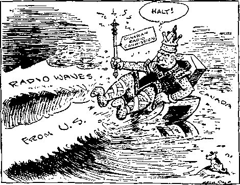

A JOURNAL OF FACT HOPE AND COURAGE
llllllllllllllllllllllllllllllllillllllllllllilllllllllllllllllllllllllll
in this issue
WILL CHARLESWORTH DROWN?
BAKER’S NEW RADIO STATION NEWS BITS BARTER EXCHANGES JEHOVAH’S PROMISE TO HIS FRIEND
llllllllllllllllllllllllllllllllillllllllllllilllllllllllllllllllllllllll
every other WEDNESDAY
five cents a copy one dollar a year Canada & Foreign 1.25
Vol. XIV - No. 353
March 29, 1933
LABOR AND ECONOMICS
Sweat Shops in Connecticut . . . 403
German Jobless Build Own Homes 403
Where Tax Money Goes .... 404
Waterloo Unemployed ’Relief Club 406
The Barter Exchanges .... 415
How Steel Company Works Dole . 415
SOCIAL AND EDUCATIONAL
Will Hector Charlesworth Drown?
In Mecklenburg County, N. C. . . 398
Brief History of Broadcasting . . 398
Negro Low Suicide Rate .... 400
Why Spain Destroyed Churches . 403
Tribute to Andrew W. Mellon . . 408
Baker’s New Station at Laredo . 409
Torture of Negroes in Georgia . . 404
MANUFACTURING AND MINING
Oil-Producing Countries .... 397
Fuel Oil from Coal in Japan . . . 398
The Marion Shovel No. 5560 . . 406
FINANCE—COMMERCE—TRANSPORTATION
19,500 Miles of Lighted Airways . 397
Diesel Locomotive Trains .... 398
Car Ferry Across English Channel 400
Newark Airport.......401
Mercer Trouser Company, Inc. . . 403
French Will Have Biggest Ship . 404
Where the Relief Went- .... 407
POLITICAL—DOMESTIC AND FOREIGN
Fourteen Mendicant States . . . 396
Italian Industry Fully Organized . 401
United States and League of Nations 407
The Dying League......408
AGRICULTURE AND HUSBANDRY
When Britain Buys Wheat . . . 399
A Much More Prolific Cotton . . 402
Gigantic Land Scheme in California 406
Germany Moves Earthward . . . 407
More About Sprayed Apples . . 410
SCIENCE AND INVENTION
The Watsongraph Radio Typewriter 397
Production of Artificial Rain . . 397
New Anesthetic, Avertin .... 398
Commercial Submarine a Sucee.« . 400
Ears of Japan’s Army.....400
Gyroscopic Stabilizer a Success . . 403
Automatic Stool Pigeon .... 404
HOME AND HEALTH
The Scientific Grocer.....405
TRAVEL AND MISCELLANY
The Dam at Dnieprostroi .... 397
Growth of Jewish Population . . 398
French Rhine Hydro Development 398
RELIGION AND PHILOSOPHY
Ahaziah Fell Through Lattice . 396
Only Another Form of Paganism . 400
Church Business in England . . 401
Epistle from Rev. Cotton Mather . 405
Jehovah’s Promise to His Friend 411
Published every other Wednesday at 117 Adams Street, Brooklyn, N, Y., V. S. A., by WOODWORTH, KNORR & COWARD
Copartners and Proprietors Address: 117 Adams Street, Brooklyn, N. V. S. .4. CLAYTON J. WOODWORTH Editor E. J. COWARD Business Manager NATHAN H. KNORR Secretary and Treasurer
Five Cents a Copy—$1.00 a Year Make Remittances to THE GOLDEN AGE Notice to Subscribers: For your own safety, remit by postal or express money order. We do not, as a rule, send acknowledgment of a renewal or a new subscription. Renewal blank (carrying notice of expiration) is sent with the journal one month before the subscription expires. Change of address, when requested, may be expected to appear on address label within one month.
Published also in Esperanto, Finnish, German, Japanese, Norwegian, Polish Swedish.
t ' Offices in Other Countries
British............34 Craven Terrace. London, W. 2. England
Canadian ........... 40 Irwin Avenue, Toronto 5, Ontario, Canada Australasian ...... 7 Beresford Rd., Strathfleld, N. S. W., Australia South African......... Boston House, Cape Town, South Africa
Entered as second-class matter at Brooklyn, N. Y., under the Act of March 3, 1879.
Volume XIV Brooklyn, N. Y., Wednesday, March 29, 1933 Number 353
Will Hector Charlesworth, Canadian Radio Censor, Drown?
TT IS a task for an honest and truthful man to have to say anything about such an individual as Hector Charlesworth, Canada’s Radio Dictator. No self-respecting, decent man could have written such billingsgate as appeared in the Toronto Saturday TSTight of August 6, 1927, at which time he was its editor-in-chief. The paper improved by his leaving it.
KING CANUTE, 1933
TM CvadUn B*4i« hu c*BMre4 certain brocdmtta la Caaeita, Tbc Mm Cntnrtt,
Ut *k 1m the United stale*.
(Courtesy of Winnipeg Free Press Erening Bulletin)
Charlesworth probably wrote the article entitled “Visiting Orators Take Notice”, reproduced in our issue of March 15. The mental level of one who would refer to Jehovah God as “the tribal god of the Bussellites” and W’ho would refer to a man like Judge Rutherford as “a heavy- jowled flannel-mouth, Grand Vizier of the 'Russellites’ ”, a judge “perhaps of cigars, perhaps of fat swine”, a “wandering orator”, “wandering blatherskite”, “professional liar”, “lying demagogue”, speaks for itself. It pains us to notice him at all.
Mr. Charlesworth’s apperceptions are plainly indicated in a sentence which is contained in the article in question. In it he says :
“Never have conditions been so good for the poor; never at any time in the history of mankind was labor so well rewarded, never was so much practical philanthropy practiced for the care of the weak and needy, never was so much capital freely available for the care and comfort of the underprivileged. Only a fool or a liar could deny these facts. ’ ’
Very well! Let them stand. And let all mankind judge who is the fool and the liar, and the human polecat.
But hold! We have something of direct interest on this question of liars. In the first place, truthful men are not selected as censors. It is a dirty job, and only dirty men will take it or do the dirty work that has to be done. It would be inconceivable that a man like Hector
Charlesworth would take a job as radio censor for Canada (and as his very first act, arbitrarily, w i t h o u t any hearings, order off the air the man who has several times had the honor of the very greatest radio broadcasts in history) without being a crass liar, fit only to associate with clergymen—men designated in the Scriptures as “men of corrupt minds", incapable of thinking honestly or truthfully. And such he evidently is.
As to why Judge Rutherford’s transcriptions were ordered off the air in Canada, the Telegraph Journal of Saint John, N. B., said: “Hector Charlesworth, chairman of the radio commission, stated a dignified complaint had been received from a group of Anglican clergymen in Saint John.” But in a wire to D. R. P. Coats, CJRW, Fleming, Saskatchewan, Charlesworth said, “We have had no complaints of Bible Students’ programs,” denying that the Rutherford transcriptions had been banned “at the instance of the clergy”. Lying comes easy to a man that could write such an article as “Visiting Orators Take Notice”.
It is no wonder to us that Axel Nielsen, in his letter to Charlesworth, dated January 23, 1933, and published in our issue of March 15, 1933, said:
I used to admire you in the way one might admire the Devil for his ingenuity, no matter what I might think otherwise of either you or the Devil, for the hypocritical narratives in Saturday Night written or selected by yourself. They must have been hard to write; for such things do not come from the heart, but rather must they spring from a taskmaster like gold, or the degradingly pleasant feeling of going downstream without effort.
In his delineation of the sheet over which Charlesworth presided before being elevated to the position of Canadian Radio Dictator, Mr. Nielsen described it as:
A weekly whose financial section is dominated by the crowd which is persecuting James Harpel, and the same War Babies who have secured control of Canadian finance, industry and insurance. The editorial portion of this paper, a front page feature, devotes itself zealously to the furtherance of all the forgotten bunk of kings and tyrants, class and privilege. As for the rest, it consists mainly of social chatter, marriages, photos of socially prominent persons, and all the snobs parade of these classes.
At this point one would fain close both nostrils with the thumb and finger of the left hand and with the other take the tongs and drop overboard this “King Canute of Canada in 1933” that is illustrated in the cartoon from the Free Press Evening Bulletin of Winnipeg which adorns the first page of this article. But it is a libel against old King Canute to compare him to Charlesworth without saying something in his defense.
It is true that old Canute, the first Danish king of England, murdered his own brother-inlaw, but kings are liable to be playful like that. But his kowtowing to the “pope” was because he did not know any better, while Charlesworth’s feigned obeisance to the clergy is merely that of a fawning hypocrite. He knows they are not honest; everybody knows it.
Canute was quite some ruler. He issued the first national coinage of Denmark and published the first written code of Danish law. It is true, however, that he raised the clergy to a separate estate in the Danish realm, thus fastening those bloodsuckers on the necks of the Danish people. Also, he started the Danish nobility, another gang of frauds, and made them into his highest court of justice. He was a crook, all right.
It was not a half-bad concept that likened Charlesworth to King Canute. The old gent, it will be remembered, was so accustomed to ordering everybody around, and insisting that they obey him instanter, that he kept court one day down by the sea, and ordered the waves not to rise around his throne. He would have drowned if somebody with more sense had not dragged him away.
But now, turning for the moment away from the old fraud that has been dead for nine hundred years, we consider what may be the fate of this modern copy of the more noble original. We pass up the fact that radio waves from the United States continue to pour into Canada, laden with the truth as it is stored up in Judge Rutherford’s transcriptions.
What interests us just now is the statement of Jehovah God through the prophet Amos as to what He intends to do with His enemies, and we recognize Hector Charlesworth as one of these. He might repent, if there be anything in him to which to make an appeal, but the man is sunk so low that any such appeal seems useless.
Jehovah God knows what He will do with this man if he does not repent; and while we do not know Charlesworth will be such till the last, yet he is such now, and we have a perfect right here to cite the fate which awaits him if he so continues. Here is what Jehovah has to say about what He will measure out to His enemies.
I saw the Lord standing upon the altar: and he said, Smite the lintel of the door, that the posts may shake: and cut them in the head, all of them; and I will slay the last of them with the sword: he that fleeth of them shall not flee away, and he that escapeth of them shall not be delivered. Though they dig into hell, thence shall mine hand take them; though they climb up to heaven, thence will I bring them down: and though they hide themselves in the top of [Mount] Carmel, I will search and take them out thence; and though they be hid from my sight in the bottom of the sea, thence will I command the serpent, and he shall bite them: and though they go into captivity before their enemies, thence will I command the sword, and it shall slay them: and I will set mine eyes upon them for evil, and not for good. And the Lord God of hosts is he that toucheth the land, and it shall melt, and all that dwell therein shall mourn: and it shall rise up wholly like a flood; and shall be drowned, as by the flood of Egypt. It is he that buildeth his stories in the heaven, and hath founded his troop in the earth; he that calleth for the waters of the sea, and poureth them out upon the face of the earth; [Jehovah] is his name.—Amos 9:1-6.
That this is not a literal drowning is at once apparent from the clause which says that “though they be hid from my sight in the bottom of the sea, thence will I command the serpent, and he shall bite them-’. This drowning of the Devil’s organization, and those that go to make it up, is an overwhelming of it.
First it will be overwhelmed with the truth, which water so nicely represents, and then the truth will be backed up with infinite power. ‘The earth shall be full of the knowledge of the glory of God as the waters cover the sea.’ In the midst of that knowledge, while it is all-pervasive in the earth, the Devil and his organization will be destroyed; they will go down to rise no more. They will be “drowned”. “They shall be as though they had not been.” The earth will be purified by their removal from it.
Honest men want the Devil and his crowd “drowned” now. They pray for that every day when they pray, ‘Thy kingdom come; thy will be done on earth as it is done in heaven.’ They would not single out Charlesworth and pray that God would put an end to him; nor would they single out the three clerical sons of dogs (Isaiah 56:10,11) who are supposed to have incited him to his recent act of tyranny. It would be asking too much of the Creator to directly invite His attention to such. He knows who His enemies are.
But now’ that we are living in the Judgment Day, honest men cannot help crying out to justice to remove from the scene the human polecats that have so vitiated the atmosphere. A polecat with his collar turned backward knows how to do just one thing, and it is something the rest of us can get along nicely without. “Drowning,” literal or figurative, is good.
So it was from a full heart that William Brown of Portage la Prairie, Manitoba, wrote to the Winnipeg Free Press:
To the Editor.— It is my belief that less injury would be done to Canada if the dignified Anglican clergymen who asked for the suppression of the addresses of Judge Rutherford over the radio, and the radio commission members, were drowned, rather than that Rutherford should be suppressed as an “antisocial agitator”. If that act is approved the liberty and freedom of the individual in Canada has been crucified. “I may not believe a word you say, but I will defend with my life, if need be, your right to say it.”
It should not be thought from this that Mr. Brown is savagely wishing to wreak vengeance on anybody. Xot at all. He is probably one of those that pray continually for God’s kingdom to fully come. Quite likely he often ponders, for his own encouragement, the statement that “for this purpose the Son of God was manifested, that he might destroy the works of the devil” (1 John 3:8) and he is anxious for this part of the Kingdom work to begin in his own day. It is a natural and a proper wish, but, if necessary, we can stand the polecats a while longer, until the time comes to bury them, and fumigate the place where they once were.
The true glory of the polecat mind was back in the days of the Holy Office of the Inquisition. Then anybody who questioned the ipse dixits of the clergy was promptly boiled in oil, or burned at the stake, torn apart or cut up, bit by bit. Charlesworth would have been a valuable man in those days. He would have done the dirty work, while Reverends McKim, Martin and Steward would have gladly stood by with stop watches in their hands, to momentarily arrest the work of torture when it should appear that the victim was about to be released from his agonies by death. Gentle souls! A polecat presents one of the meekest appearances of any woodland creature.
The Canadian people, especially the western Canadians, do not relish having their thinking done for them by men like Charlesworth, McKim, Martin and Steward. They would like to do some of it themselves. As the Winnipeg Free Press says: “The best and safest plan for the Commission is to make up its mind that it is dealing with a free people and, therefore, despite any ideas in high places as to what is good for the license holders, will proceed to present as many facets as possible of world opinion.”
A subscriber of the Winnipeg Tribune expresses the matter very well:
“To the Editor of The Tribune. Sir,— Re the lectures by Judge Rutherford. The last three lines of a report in yesterday's issue of the Tribune state, or rather Mr. Charlesworth states, that there has been no complaint as to the electrical transcriptions of Judge Rutherford. Now, the question is, just who is this individual who assumes the responsibility of putting a ban on the lectures of one of the most interesting, also the greatest interpreter of the Scriptures on the continent, if not in the world? lie does not attack any religions, but as his reference to such he quotes only the Bible, book, chapter and verse, let it hurt who it may.
“As for his attacking governments, he surely does not favor his own country, the U. S. A., and as for Canada, well, we Canadians are glad he is not listening to certain things in our own country. So much for the governments: but Mr. Charlesworth should be informed that Judge Rutherford’s lectures are more eagerly awaited than nine-tenths of the programs broadcast on this continent. And again I question, or rather we question, his authority in holding them up. In the one block in which I live we are all interested in the explanation of the actions of those who assumed the authority of putting a ban on the lectures of Judge Rutherford, not the Bible Society.”
From Judge Rutherford’s gifted pen we herewith repeat some of the statements on this subject which appear in his article entitled “Important Notice”, which constitutes the leading article in our issue of March 1, 1933.
If the official representatives of the seventh world power must first approve what is broadcast by radio, then the people may be assured that those powers will approve nothing that carries to the people the truth concerning the present unhappy condition and what is the remedy.
Since the Anglo-American empire system, or ‘ ‘ Christendom”, is the chief visible part of Satan’s organization on earth, it is certain, according to the Scriptures, that it will suffer the most. Armageddon will be terrible upon all nations, but particularly upon the realm of “Christendom” because within that realm is found the greatest opposition to the message of Jehovah’s truth. Jehovah says concerning that time: “For, lo, I begin to bring evil on the city which is called by my name, and should ye be utterly unpunished? Ye shall not be unpunished: for I will call for a sword upon all the inhabitants of the earth, saith the Lord of hosts. . . . And the slain of the Lord shall be at that day from one end of the earth even unto the other end of the earth: they shall not be lamented, neither gathered, nor buried; they shall be dung upon the ground.”—Jeremiah 25: 29-33.
If there is a way of escape from the disaster coming upon humankind, no one could avail himself of that way unless he is first informed as to the means of escape. To keep the people in ignorance of God's Word of truth would mean to prevent them from knowing the way of escape.
Everybody knows that the peoples of the world are now in great distress and perplexity, and there is no earthly power that can pull the nations out of that dilemma. Why then denounce anyone who is merely telling the people why these things have come to pass and what is God's remedy for suffering humanity? The only answer is, Because Satan exercises his subtle influence to keep the people in ignorance in order that he may turn them away from Jehovah and cause their destraction.
Every one will identify himself. As Jehu caused all the Baal worshipers to identify themselves before he slew them, so likewise Christ Jesus, the Greater Jehu, will cause all the Devil’s representatives to identify themselves before He slays them. AU who oppose God and His kingdom message thus identify themselves as being on the Devil’s side.
Members of the Radio Commission of Canada are supposed to be the servants of the people, but they now presumptuously put themselves in a position of dictators by determining what the people shall or shall not hear by radio. If they have the power to censor one speech, they can censor all and keep the people in darkness. Have the people of Canada reached such a state of low intellectuality that they need to have a “wise” radio commission to approve what they shall hear about the Bible? This censorship order bears the earmarks of the clergy, who have assumed to be the spiritual guardians of mankind. Themselves being unable to explain the Bible truths now in the hands of the people, they want to prevent them from hearing more.
The future of the human polecats does not look bright. It is too bad to have to use a good pair of tongs on them, but the tongs can be fumigated.
Most people are so used to being robbed and lied to that they take it all meekly as a matter of course. Some are even grateful to the thieves and liars and prostrate themselves before them, but occasionally there is one that straightway sees the point when a wrong has been done, and once in a great while there is a newspaper that has the courage to speak up.
In a recent issue of the Vancouver Sun there appeared the following letter:
RADIO BAN
Editor, Sun: Sir,— After reading the news item on front page of Sun last Thursday regarding the banning of Judge Rutherford’s usual weekly 15-min-ute Bible lecture from all Canadian broadcasting stations, I became curious to know just why a few dignified divines (D.D.’s) had complained about this “foreign agitator’’ as they were pleased to call him.
So I tuned in on station KJR Seattle at 10: 30 a.m. Sunday and heard this world-famed Bible scholar preach the truth from the Bible.
I understand now why the clergy object to the preaching of the truth. They never did like it.
When Jesus was on earth He didn’t have anything complimentary to say to them or about them. He called them “wolves in sheep’s clothing,’’ “whited sepulchres,” “scribes, Pharisees, hypocrites,”etc., etc., and they tried to stop Him.
They finally crucified Him. The clergy of today are the exact counterpart of this class, and if Jesus Christ was on earth again in the flesh they would crucify Him again.
The people are tired of listening to unscriptural doctrines like the “trinity,” a brimstone “hell,” “immortality of the soul,” etc., etc., consequently the churches arc mostly empty and the clergy are naturally peeved.
Judge Rutherford preaches Bible truths and nothing else, so I will continue to listen in to his message over KJR every Sunday morning at 10: 30. I will also obtain some of his books and I know I will enjoy them.
2043 East 7th Ave. William Forsythe.
Mr. Forsythe sees the issue a great deal more clearly than the editor of the Toronto Mail and Empire. The latter is a paper of great influence in Canada, but without hesitation it threw the entire weight of its voice against justice and reason and liberty, and in favor of tyranny, prejudice and bondage. Their editorial we put into the record, to their’ shame. When will the common people ever learn that among their most potent enemies are the newspapers, the mouthpieces of Big Business? The following is the editorial which appeared in the Mail and Empire of January 20. We reproduce it under our own headline.
Canada Gives Up Her Liberties
The Canadian Radio Commission has prohibited further broadcasting of Judge Rutherford’s speeches by Canadian stations until these are approved by the censor. These speeches have been a feature of the so-called Watch Tower International Broadcast, a service that has been identified with the International Bible Students’ Association.
This action of the Charlesworth Commission recalls a similar one taken by the Mackenzie King Government in 1929. At that time Hon. Mr. Cardin, Minister of Marine, refused a renewal of licenses to four radio stations belonging to this Bible Students’ Association, an organization which used to be on the air early and late, week days and Sundays, mingling Bible quotations with the bitterest attacks upon the churches, the clergy of all denominations and the British Empire. It constantly supplied the unthinking with the most disturbing, revolutionary teachings. In an effort to arouse popular sentiment against the Liberal Government of that day, the association distributed a leaflet entitled “The Messenger.” Assuming the role of Moses on Mount Sinai the organization thundered in the name of “Jehovah God.”
“No longer can Canada boast of being a land of religious freedom. The fact that the Government now controls the air and uses its influence to the end that only such clergymen shall broadcast their sermons as will, hypocritically in the name of the Lord, serve up a mixture of meaningless nonsense which has the approval of the powers that be and which ignores the Word of God, is but another proof that freedom of thought is done. It is also evidence that the end is near. No nation can continue to ignore God and continue to exist. The selfish predatory powers have the people by the throat and oppress them without mercy. Unfaithful to God, the clergy ally themselves with that unrighteous influence, aiding in the oppression of the people and in keeping them in ignorance of God’s provision for their welfare. God has promised to hear the cries of the people in due time. Their cries have reached unto His ears. The end of oppression is near at hand. It will be the most terrible day of reckoning that the world has ever known. God declares He will justly and fully recompense the oppressors by completely breaking them to pieces.”
Some members of the Conservative Opposition made the mistake of championing the Bible Students, but Mr. Cardin and the Mackenzie King Government were urged to take courage and stand their ground against a species of propaganda originating in the United States, which often expressed views hostile to established institutions both in the United States and in this country. The issue has once more arisen in a somewhat different form. Prohibited from owningstations in this country, the organization has been using a number of Canadian stations. We think that the general feeling throughout Canada will support the decree just issued by the Canadian Radio Commission, which henceforth subjects all Watch Tower broadcasts to a strict censorship. The Commission may not be able to exclude these broadcasts altogether if the organization is able to employ powerful United States stations to reach Canadian listeners. But at least the Canadian Commission will not be placing the mark of its approval upon propaganda which it regards as injurious to the general public.
For a censor, 1933 model, Charlesworth is jumpy and nervous. Polecats are like that, or seem to be. Thus, when the Calgary (Alberta) station CFCN wired him: “With reference to your wire re Judge Rutherford transcriptions: local organization now desire to put on local speaker for these periods. Please advise us your wishes re such arrangements,” he wired back “The International Bible Students are at liberty to put on local speaker so long as he refrains from offensive comments on doctrines and clergy of other denominations and from abuse of public men and institutions in Canada. Watch this continuity carefully and cut off if these conditions are broken.”
Now what is there about Canadian doctrines, and Canadian clergy, Canadian public men and Canadian institutions that is so sacrosanct that they must not be mentioned ? Are the men that are lined squarely up on the side of the Devil so thin-skinned that they deny their parentage? If Charlesworth had been present when Jesus told the scribes and Pharisees “Ye are of your father the devil”, he would have said something to Him like what he said about Judge Rutherford in Saturday Night. A polecat hates to have anything said reflecting on him or his fellow polecats.
The periodical Hush goes after Charlesworth in its issue of February 4 with a good deal more courage and manliness than was shown by the Mail and Empire. The editor does not relish giving up all his rights to a polecat.
“Let There be Light’’
What Winnipeg Influence Caused Hector Charlesworth to Ban Judge Rutherford’s Orations on
Radio? — Were They Afraid of More Light on the Stubbs Charges ? — Why Do the Clergy Tremble ? — Truth Must Prevail
That old Saturday Night-Big Interest sweetheart, Hector Charlesworth, now playing the role of Chairman of the Federal Radio Commission, issued instructions last week to all radio stations to discontinue the Judge Rutherford Bible student broadcasts pending their censorship by the Commission as being not abusive of other religious or governmental institutions. Who is dictating to Hector Charlesworth now? Is somebody or some government faction afraid of the TRUTH being broadcast? Mr. Charlesworth denies that the ban is the result of interference by the clergy of Canada. If this is true, then who is responsible for this extraordinary action? It is safe to say that 75 per cent of radio listeners desire to hear what Judge Rutherford has to say about modern institutions.
The United States Government has never considered such steps necessary. It is common knowledge that the super-sensitive Canadian clergy are afraid of Judge Rutherford’s pundits of TRUTH. It is significant that the first move to break this ban was taken in Winnipeg, where the citizens are, more than ever, crying for the Light amidst a fog of charges and counter charges of graft, theft, corruption, judicial irregularities, suppression of free speech and what not. If the public of Canada were not universally trained by the Big Interest suborned press to believe in any hypocrite who carried a Bible in his hands, with a lie on his lips at the same time to hide his criminal acts, blind faith would not have been placed for so long in “Honest John” Machray who fun-dumblcd, foneyfugled and hoodwinked the silly people of Winnipeg for so many years, during which he contrived to convert criminally over $1,000,000 of sacred trust funds.
Perhaps some kind soul in Winnipeg thought Judge Rutherford might comment on the Stubbs affair, because it is known that Rutherford, like Stubbs, is an exponent of the TRUTH? Hector Charlesworth has ever lived in a world of literary dreams, save when listening with intent submission to the “Master’s Voice”. He has now received the Master’s reward— he is a little silver cog in the System’s wheel. God bless and keep Hector Charlesworth in his servility!
Two weeks after the foregoing appeared in Hush, the periodical Justice (Halifax, Nova Scotia) published the following, which is of real value to the cause of truth in the earth at this critical time:
TORY WAR-MONGERS
The following will give you an idea why the Tory war-mongers ruled Judge Rutherford off the air:
Over a recent national chain of radio stations, Judge Rutherford startled millions of listeners with his emphatic pronouncement that within a short time the people will witness the complete destruction of the American government. Never before in the history of this nation had the people heard such statements of stinging rebuke and indictment against the rulers of this land, Big Business and its allies and abettors in crime, the politicians and professional clergymen. He quoted ample Bible proofs and cited physical facts and documentary evidence for every charge against the cruel and oppressive rulers of the American people. Judge Rutherford does not take sides in politics, nor does he indulge in personalities. His only motive is to point out to the people from the Scriptures that their only hope for relief from the terrible suffering, distress and unrighteousness now prevailing on the earth is God’s Kingdom which, the prophecies disclose, will soon displace all present governments.
We quote a few statements Judge Rutherford made:
Today there is no true patriotism among the rulers of the nation. It is now impossible for the people to elect men to public office and to expect them to enact just laws and to administer the affairs of the government for the general welfare.
Big Business has no regard for the rights of the common people.
It controls the two major political parties of America, and names and elects at will the public men to office who will best serve their selfish interests. Big Business controls the army and the navy, the guns and the ammunition and the police power of the nation.
Satan has used commerce, politics and religion that he might get complete control of the human race and defame the name and Word of Jehovah God. For this reason, it is written in the Bible (1 John 5: 19), ‘The whole world is now under the wicked one.’
The rulers have been duly informed and duly warned that Jehovah God’s kingdom is here. They have refused to give heed. They disregard the Word of God and go on with their imperfect schemes, and will continue to try one after another, all of which shall fail.
The greatest crisis of the ages is now upon the world, and this includes the American government.
If Jesus were to walk into Washington today and mingle with the suffering veterans in their camp He would be denounced by the clergymen as a man of low civilization. It is this same class of clergymen and political lobbyists that recently adopted a resolution, which appears in the Washington Herald under date of June 10, 1932, declaring that Christ Jesus belongs to a lower civilization.
The clergy, while claiming to represent God, in fact represent the Devil and his organization. In order that the people might hear the truth and determine this matter for themselves recently I challenged the combined clergy of America to select their best man to debate this question by radio. Charged with misrepresenting God and serving Satan these gentlemen should either come forward and prove the falsity of the charge or, failing in that, should cease to hold themselves out as teachers of the Word of God. Jehovah foretold the outcome of such a challenge and the attitude that would be assumed by the preachers, when He caused His prophet Jeremiah to write, at chapter fifty-one, verse thirty: “The mighty men of Babylon [Satan’s organization] have forborn to fight; they have remained in their holds: their might hath failed.” Let the people take note of this fact.
In 1917 Big Business, for ultraselfish reasons, needlessly and wantonly forced the American nation into the World War which resulted in the greatly increased wealth and power of a few men and made serfs and paupers of many millions of people.
With grasping arms like the tentacles of a mighty octopus, Big Business has laid hold upon practically all of the visible wealth of the nation.
The American government has been weighed in the balance and found wanting. It cannot endure. Together with all other nations, it soon shall fall. Such fall will be in spite of everything Big Business, politicians and clergymen, the military and the “strong-arm squad,” and the Devil and all of his hosts can do to hold together the oppressive rule. It must and will fall because Jehovah God’s kingdom is here. Hasten now to take shelter under Jehovah’s kingdom.
The same selfish interests own and control the professional clergymen, and these men make merchandise of the Word of God in order to keep the people in ignorance and in subjection to the ruling powers. Thus it is plainly seen that the power of the government is centralized in the hands of a very few.
Within a short time Jehovah God will destroy the Devil and his entire organization.
Jehovah made this earth for man to live upon in peace and plenty, health and happiness; and under the reign of Christ, He declares, the earth shall yield her increase, and God shall bless the people, and all in the earth shall know Him.
The Devil always gets off to a flying start. Charlesworth and his fellow polecats were in high feather on January 16, when they let loose. It takes the Lord’s people time to get under way with the fumigating and cleansing process now commanding attention.
On February 18 the “Important Notice”, which was our leading article in Number 351, began to be placed in every home in Canada. Straightway the Devil’s crowd began to evidence pain. Protests appeared in several papers, but it is like protesting against a snowstorm after the storm has begun. A particularly amusing squawk is the following, which appeared in the Toronto Star for February 23:
A REMONSTRANCE
To the Editor of the Star:
Sir: Toronto, if not Canada at large, has been flooded during the last few days with a four-page important notice from Judge Rutherford, the head of tho Russellite or International Bible Student Movement, protesting against the action of Mr. Charlesworth, the chairman of the Canadian Radio Commission, in suppressing or censoring the broadcasting of his speeches.
Canadians generally will doubtlessly be intelligent enough to valuate for themselves the main content of the appeal, which is, like much of their teaching, a curious compound of truth and error. He quotes a great deal of Scripture, but Scripture can be strangely perverted, and texts can be torn bleeding from their context.
But there is a postscript, to which special attention is called as a challenge to the clergy. He takes the names of three honored clergymen of the Anglican church, Canon McKim, the Rev. Mr. Steward and the Rev. Mr. Martin, rectors of churches in St. John, N. B., men of the highest reputation for probity, piety and practical Christianity. And says: “These reverend gentlemen pose before the people as the representatives of God and Christ and His kingdom. I charge that they in fact represent Satan the Devil.” And then he adds a wider challenge that “the clergymen of the Anglican church, contrary to their claim, do not in fact represent Jehovah God and Christ Jesus and His kingdom, but that they do represent and serve Satan the Devil and that thereby the people are deceived.” I simply want to point out, as a remonstrance against such assertions, that these men, two of whom I know intimately, are truly consecrated men of God and that Judge Rutherford’s widely disseminated diatribe against the Anglican church as a whole wrould in itself warrant the Radio Commission of Canada in refusing the Russellites the use of existing facilities for broadcasting without first submitting the same to the broadcasting commission.
Toronto. (Rev.) Dyson Hague
Reverend Hague, in his grief over the charge that McKim, Steward and Martin represent Satan the Devil, and that the clergymen of the Anglican church, all of them, are in the same boat, seems to have overlooked the fact that the remedy is in their own hands. All they have to do is get together and arrange the radio debate that Judge Rutherford has invited.
The Moncton (N. B.) Daily Times of February 27 contained the following, which is true in the words which we have reproduced in italics. The rest of it is false. That is something of a record, 6 true words out of 59. We assume, because of its untruthfulness, that it was written by some clergyman, some man of corrupt mind, some polecat. The headline is ours:
ALL OVER CANADA
The blasphemous Rutherford leaflets recently distributed from door to door in Moncton were circulated generally all over Canada. In Toronto some school children were engaged in the work, probably not knowing the character of the leaflet but,out to make a few dimes. Again it is pertinent to enquire whence the source of the money available for this work.
Not only are the clergy afraid to face the issue, but the newspapers betray the same anxiety not to let this matter come before the people in its true light. If Judge Rutherford’s charges are true, as we firmly believe them to be, then it is of the utmost importance that the people know the truth, so that they can range themselves on the side of the God whom they elect to serve.
The newspapers should aid them in this, but the Toronto Star, though publishing Reverend Hague’s remonstrance, tries to pass over the matter lightly in its accompanying editorial herewith reproduced. This editorial is of no value, because it helps the people not at all. Most people who read it, instead of seeing the great issues at stake, will be misled by the attempted facetiousness of the editor into thinking that it makes no difference whether Judge Rutherford is right or wrong. In point of fact, it actually makes all the difference between life and death.
MR. CHARLESWORTH IN THE LIGHT OF PROPHECY
When Hector Charlesworth was made chairman of the Radio Commission we said that, on looking back, it seemed to us that all his life he had been in training for this post. Today we are not so sure of it. Mr. Charlesworth is up against something now for which we cannot see that he has had any training. Judge Rutherford is after him with Biblical prophecies of great omen. A four-page folder is being distributed from house to house in Toronto conveying an Important Notice, beginning in this way:
About the 18th of January, 1933, the following telegram was sent by the Canadian Radio Commission to radio stations throughout that country:
“Speeches of one Judge Rutherford, foreign anti-social agitator, must not be broadcast by Canadian stations until the continuity or records of same are submitted to the Canadian Radio Broadcasting Commission for approval.
“Signed,
“Hector Charlesworth,
“Chairman.”
Judge Rutherford, who deals with prophecies over the air, had not predicted this order. So out comes his four-page folder. Mr. Charlesworth has probably read more literature about the Battle of Waterloo than about the Battle of Armageddon. He has probably studied Shakespeare and other dramatists, ancient and modern, English and foreign, more than he has the prophecies of the Holy Scriptures. We may bo doing him an injustice in saying this, but, at least, we are justified in saying that Mr. Charlesworth has written in the press more about Eugene O’Neill than about the Prophet Ezekiel.
Judge Rutherford tells us in his four-page folder that the “great Battle of Armageddon is approaching, at which time the final conflict between the forces of Satan and those of Jehovah will take place.” Rumor had it that Satan had lost out long ago, but we have at times had reason to suspect that certain persons we do not care to name were working for him either directly or indirectly. We had no idea, however, after glimpsing Milton and Dante that Lucifer was still in a position to fight to a show-down. Judge Rutherford has not a doubt. The great fight comes.
The British Empire is the seventh Empire. Seven is a mystic number; why should there be more than seven Empires? Of course by leaving out an Empire here and there the British Empire could be called the sixth or by adding an Empire or two it could be shown to be the ninth or the eleventh, but in order that it may conform to expectant prophecy let us call it the seventh and await the millennium. Here is where Mr. Charlesworth ought to consult his lawyer. Judge Rutherford writes:
“The Scriptures show that the chief officer of Satan in leading his wicked forces is called Gog and who formulates and leads in a conspiracy against Jehovah’s witnesses and against His kingdom, and that such conspiracy will begin and be prosecuted within the realms of the seventh world power above mentioned. Satan’s effort is to keep the people in ignorance of what is about to come to pass.”
While we wish to occupy an entirely impartial position in this discussion we feel compelled to say that Judge Rutherford pretty clearly indicates that he identifies Mr. Charlesworth as Gog, the chief Canadian agent of Satan. This, we feel sure, was not an office which Mr. Charlesworth knowingly accepted at the request of Prime Minister Bennett, who merely asked him to take charge of radio.
In concluding his four-page folder Judge Rutherford challenges the clergy to meet him in debate—the clergy who represent Satan while he, alone on earth evidently, represents God—but we would suggest that the argument is shifted and that Judge Rutherford should challenge Mr. Hector Charlesworth to meet him in debate in Massey Hall on some date agreeable to both parties. What a night!
“Saturday Night” on a Higher Plane
We have before indicated our appreciation of the fact that Saturday Night was improved by Hector Charlesworth’s connection with it being severed. We do not see how it could have been otherwise. His withdrawal from anything would automatically cleanse and purify it. From the issue of February 25 we quote the following not half bad front page item. It shines by contrast with the supine editorial in the Mail and Empire and the colorless one in the Star.
SATAN AND THE RADIO SYSTEM
WE LEARN from a circular signed by the eminent Judge Rutherford, who further subscribes himself “one of the servants of Jehovah”, that it is his contention that the clergymen of the Anglican Church “do represent and serve Satan the Devil and that thereby the people are deceived”. He desires to debate this contention over a national radio chain with one of the three Anglican clergymen of Saint John whose protest recently led to his being excluded from the Canadian radio stations. The contention, which, it should be borne in mind, would have had the support of quite a large number of Christian Canadians in the more violent theological days of the Family Compact, strikes us as an interesting one about which we should like to hear more, although the probability of our being converted to a thorough-going belief in it is extremely small. Since, however, the judge is not likely to be permitted to rejoin the gracious company of educators who are now engaged in improving the minds of the Canadian people with the aid of the wave systems discovered by Marconi, we presume we shall have to rely upon his printed literature, which is not yet being suppressed when printed in Canada.
There is one thing about it, and that is that his exclusion from the radio system can have caused no surprise to so earnest a Bible student as Judge Rutherford, who may be well aware that one of Satan’s most important titles is that of ‘ ‘ prince of the powers of the air”.
The Zeal of the Neophyte
The day before Jehovah’s witnesses went into action to put the “Important Notice” regarding the radio censorship into the hands of the Canadian people, Charlesworth wired station CKOK, Detroit-Windsor, as follows:
“Our rules in connection with the Watch Tower Society are that they may go on the air provided they refrain from abuse of the doctrines and clergy of other churches and from attacks on public institutions of this country. It is necessary to watch this continuity carefully, as transgressions have occurred at several stations where the Watch Tower people have been allowed to go on the air. ’ ’
After the “Notice” campaign got under way, and the people began to get and read the folders, by the millions, he suddenly came to realize that he had grabbed a bull by the tail. In sudden fright he wired all stations in Canada as follows :
“No broadcasts containing Judge Rutherford’s speeches, letters or publications are to be carried out by any Canadian broadcasting station until continuity and records have been submitted to and approved by Canadian Radio Commission.”
That is going some. One man will do all the thinking for the people of Canada. They shall have nothing to say about it. If he thinks it is good for them to hear, they may hear it. If he thinks it best, for any reason whatever, that they should not hear it, then, in his mind, if Jesus Christ himself, or even Jehovah the Almighty God, wishes to present a message to the people of Canada, it cannot go on the air.
We recognize that spirit. It is the spirit of the one who said, “I will ascend into heaven, I will exalt my throne above the stars of God: I will sit also upon the mount of the congregation, in the sides of the north: I will ascend above the heights of the clouds: I will be like the Most High.”—Isaiah 14:13,14.
It is the spirit of the same one who said: “My river is mine own, and I have made it for myself” (Ezekiel 29:3), and of the one who said to Jesus: “All this power will I give thee, and the glory of them: for that is delivered unto me; and to whomsoever I will I give it. If thou, therefore, wilt worship me, all shall be thine.” —Luke 4:6,7.
Charlesworth Censorship Illegal
It would hardly seem necessary to call the attention of the liberty-loving people of Canada to the fact that the Charlesworth censorship is illegal, lawless, a usurpation of authority, yet we patiently do even that, knowing that the time of reckoning draws on apace in which all injustices will receive their due recompense of reward.
Judge Rutherford authorizes us to say that he has recently taken the opinion of a well-known firm of lawyers in Canada and the following is a quotation from their opinion:
“The Chairman of the Commission, Mr. Charlesworth, gives as his authority for the control of broadcasting Sections 8,9 and 10 of the Act. As yet no by-laws or regulations have been promulgated. It is our view that the telegram from the chairman to the broadcasting stations forbidding the broadcast of Judge Rutherford’s speeches in the manner that the telegram was worded, was entirely unauthorized and we do not think either the chairman or the Commission had any authority so to act until by-laws or resolutions or regulations respecting such censorship had first been passed and approved by counsel.”
We expect to have more to say, in a later issue, on this subject of robbing the people of their rights, under the specious plea of public interest, but at this point conclude to terminate this article with a quotation from the Scriptures which fits the conditions very well:
Now we call the proud happy; yea, they that work wickedness are set up; yea, they that tempt God are even delivered. Then they that feared [Jehovah] spake often one to another; and [Jehovah] hearkened, and heard it, and a book of remembrance was written before him for them that feared [Jehovah], and that thought upon his name. And they shall be mine, saith [Jehovah] of hosts, in that day when I make up my jewels; and I will spare them, as a man spareth his own son that serveth him. For, behold, the day cometh, that shall burn as an oven; and all the proud, yea, and all that do wickedly, shall be stubble: and the day that cometh shall burn them up, saith [Jehovah] of hosts, that it shall leave them neither root nor branch.—Malachi 3:15-17; 4: 1.
The complete overwhelming, annihilation of the enemies of God, referred to by the prophet Amos as a “flood-’, is here mentioned under the symbolism of a “fire”. The event is the same, and the conclusion is the same: the complete destruction of those that oppose Jehovah’s will.
Judge Rutherford, with the most important message that ever came to the sons of men, temporarily deprived of his rights in Canada, is yet in a happy place, “the secret place of the Most High,” while Hector Charlesworth, accepting the Devil’s offer, and doing his illegal bidding, is in for justly merited shame in the present, and has yet to answer at the bar of Jehovah God for the injustice and illegality he has practiced upon one of His meek and obedient servants.
Ahaziah Fell Through the Lattice
ON A CERTAIN occasion Ahaziah, king of Israel, fell through the lattice and got considerably smashed up. Thereupon he sent to Baal-zebub (the Devil) to inquire if he would get well. Elijah’s opinion was not asked or desired, but he chanced to meet the courier and told him he need proceed no further, but could go back and tell the one who sent him that he was not going to get well, but would die; and he did.
And that reminds us of what has happened to financialdom. It is sick with its last sickness. It has fallen through the lattice. The Standard Statistics Company reports that in the first nine months of 1932 the net income of 390 important corporations showed a decline of 79.8 percent from the corresponding period of 1931, itself an extremely bad year. The profits of industrial companies dropped 99.4 percent. Sixty railroads showed a net deficit of $133,135,000 against an aggregate profit last year of $67,070,000.
Viewing the matter entirely from the standpoint of the Scriptures, Judge Rutherford has expressed the opinion that, bad as the world’s financial matters now are, they will get still worse, and there will be no recovery. The antitypical Ahaziah is uneasy and fears the worst, and rightly so. Vindication Two shows that the funeral cannot be far off. “Zion heard, and was glad.”
Fourteen Mendicant States
THE Chicago Daily Tribune points out that Congressman Beek of Pennsylvania has declared that in the fiscal year 1931 fourteen states took more out of the federal treasury than they paid in internal revenue. Idaho drew out five times as much as it put in; North Dakota, six times as much; New Mexico, seven times; Wyoming, six; South Carolina, three.
Condensations
IN THE last two years gangsters have slain 33 New York policemen, and have made 33 others hopeless cripples.
BY AN official proclamation the Prussian police have been encouraged to shoot Communists engaged in acts of violence, but are warned to cooperate with Nazi storm troops and the Stahlheim of the Nationalist parties in action.
IN NEW YORK city it has been found that about 18 percent of the 30,000 women applying for aid at the Central Relief Bureau for the Registration of the Homeless are suffering from mental disorders caused by unemployment.
IN FIVE years last past, 9y2 percent of all the farms in the United States changed hands through forced sales. The number of forced sales in 1932 was 41.7 per thousand as against 26.1 the year before.
Dr. Jaime Cortesao, Portuguese historian, lecturing in Seville, Spain, declares that he has found historical records proving that Pedro Vasquez de laFrontera, of Palos, visited America in 1482, ten years before Columbus made his first voyage.
The Watsongraph Radio Typewriter
THE Watsongraph radio typewriter, successfully tested out in New York, enables the operator to be in one place and his typewriter several miles away. The system is expected to provide absolute secrecy and to be of great use in the navy, in large manufacturing plants, in news gatherings, in forestry, in train dispatching, and in police work.
The Dam at Dnieprostroi
THE dam at Dnieprostroi, Russia, is completed and inaugurates the largest hydroelectric power plant in the world. It required the services of 30,000 workers for five years. A whole new town of 120,000 people has sprung up. The building of the dam has raised the level of the upper part of the Dnieper river by 130 feet, and it is now navigable for its entire length of 1,300 miles.
COHERE are now in the United States 19,500 miles of lighted airways. Plans have been made to increase this to 25,000 miles. Beacons are placed at 10-mile to 15-mile intervals; landing fields, at 40-mile to 50-mile intervals.
SOVIET RUSSIA has declared war on illiteracy, and expects within the next five years to have wiped it out for all persons then under 50. Today three times as many persons can read and write as could do so in the days of the czar.
GOOD results have come from putting into effect in Russia the producing of artificial rain, which problem was solved in the Norwegian Institute. The apparatus used has the power to ionize the atmosphere to a distance of half a mile.
Oil-Producing Countries
THE United States last year produced 595,
000,000 barrels of oil; Soviet Union 120,000,000 barrels; Venezuela, 88,000,000; Rumania, 37,000,000; Persia, 36,000,000; and Mexico, 25,000,000. In the Soviet Union the production and marketing of oil is a government monopoly.
OUT of the fewer than 200,000 farmers in the state of Arkansas it is stated that 46,835 have borrowed some $4,000,000 for production purposes. It thus appears that about a quarter of the farmers in the state have had to borrow from Uncle Sam to keep going.
Reverend Clayton Wilkin, of Hornell, N. Y., is organizing a new church based on the platform “The Bible is not true. There never was a Christ.” Now if the Reverend Satan the Devil hears of this he will have one more pearl to add to the string he already has.
I Matilda Jones of Beaumont
Matilda Jones of Beaumont, Texas, was 13 . years old when Napoleon died, and was in L slavery for 37 years. She is a full-blooded InI dian, but at the age of 15 was stolen from her i tribe and sold into slavery. She is still in good health at 124 years of age.
THE new anesthetic, avertin, given in the form of an enema, is said to furnish a quiet and peaceful sleep, without gagging, coughing, retching or vomiting, and in many instances the patient feels so little pain that morphine need not be given after the operation is finished.
Diesel Locomotive Trains for Argentina rpHE Diesel locomotive trains that have proved J- such a huge success in Germany will be used in Argentina. Four have been made in Britain. It is claimed that the use of these engines in Britain would save the railways of that country £22,000,000 per annum.
FOR some time it has been known that it is economy for the railroads to operate their branch lines with gasoline engines. It is now found that Diesel oil-burning engines are still more economical, rendering the same service for two-thirds the gasoline-engine expense.
AT ANY hour of the day or night, by ringing up a given number, any telephone subscriber within reach of Paris may call up the Paris Observatory and a talkie machine will reply, giving the time in hours, minutes and seconds. The entire arrangement is automatic.
THE following is said to be a genuine extract from an essay written by a Bristol schoolboy : “Africa is a British colony. I will now tell you how England makes her colonies. First, a missionary is sent out. When he has found a nice, fertile country, he assembles all the natives, and says, ‘Let us pray’; and while they have their eyes shut, up goes the British flag.”
IN THE Mecklenburg County torture chamber the prisoners are chained to the wall. The feet are held together by ankle irons, and the connecting chain is locked to the wall near the floor. Wrists are handcuffed and chained to a bar over the prisoner’s head and the prisoner sometimes remains in that position night and day for as long as two nights at a time. On release they often faint from weakness, but, after being given a small meal, are put to work.
"^TEW YORK state has just completed a 600--L ’ foot vehicular tunnel under Breakneck mountain, near Cold Spring. The opening of the tunnel eliminates two dangerous grade crossings over the main line of the New York Central railway. The tunnel is electric-lighted. The portals are faced with granite.
TN SPITE of 2,000 massacres in the past fifty years, in which it is estimated that 100,000 Jews were murdered, the Jewish population of the world has in the past one hundred years grown from 3,000,000 to 16,000,000. This rate of growth is almost double that of the rest of the world in that time.
SOME say that the first regular radio broadcasting was begun at Montreal in December, 1919. Since then 34,500,000 radio sets have been placed in the homes of the people, about half of them in the United States. In Germany alone there are now 65 different wireless journals, with a total of 2,500,000 weekly subscribers.
rpiIE Japanese are obtaining one ton of good -J- fuel oil from two tons of bituminous coal mined in their new province of Manchukuo, formerly called Manchuria. The distillation at low temperatures is said to be extremely successful. It is expected that this discovery will revolutionize the Japanese navy.
IN A LONDON hospital for the insane an attendant sacrificed his job to help a sane man escape and rejoin his family. The fact that the escaped man is sane and happy is not denied, but the warder who let him out paid £10 5s. in fines and costs for heeding the imprisoned man’s plea.
THE French are inaugurating immense hydroelectric works on the Rhine, to take advantage of the fall of 588 feet between Basle and Strasbourg. They are also building a canal for navigation purposes in the same district. The hydroelectric works will be the most powerful in Europe and will serve the whole of eastern France.
WHEN Britain buys wheat from the United States at 50c a bushel, the Canadian farmer, for a like bushel, receives 55c in his currency, and the Argentinian farmer, for a like bushel, receives 70c in his currency. The gold standard of the United States works against the farmer in this way.
THE last chunk of masonry to fall in Westminster Abbey narrowly missed a group of tourists; it weighed about thirty pounds. After Armageddon, if the old pile survives that long, it will be a joy to the people, no doubt, to remove the eyesore and erect in its place something not to the glory of man but to the praise and honor of the Creator himself.
A LOUISVILLE (Kentucky) young man got in trouble in Kansas and was sent to the Hutchinson Reformatory. After sixteen months he was paroled and went back home. Unable to find work he found his way clear back to Hutchinson, and asked to check in again and finish the balance of his sentence, as he preferred to do that rather than to steal.
TWO robbers came out of a Berea (Ohio) bank with $35,000, after they had locked ten persons in the basement. One of the robbers stuck a gun in the face of a coal dealer and ordered him to get into his car. The coal dealer was provoked, and hit him so hard with his fist that he was stunned and dropped his gun. Then the coal dealer picked it up and shot him twice, and now, as soon as he gets well, if he does, he will go back to the State reformatory.
YOU would not think that baby chicks could fly from England to Russia, would you? Or maybe you would. Anyway, they do, and make the trip in 28 hours, and without anything to eat en route. Ninety percent of them survive the trip, which is quite a trip, when you reflect that the chicks are only a day old when they start on it. About the details? Oh, yes, certainly. The British have built up quite a business with Russia, and the baby chicks go through by plane, with change at Cologne and at Berlin.
IN THE seventeen Southern states there is one Negro high school for each 44,000 of Negro population, and one white high school for each 4,900 of the white population. Just why it is nine times as important to see that the whites are educated as it is to see that the Negroes have an equally good chance, we do not pretend to understand.
AKRON (Ohio) pastors, who have hitherto had only one day’s work a week, are now working on Mondays, taking exercises in the Y.M.C.A., trying to cut down their overgrown waistlines. It is not yet known what they will do during the other five days of the week, but the Scriptures seem to indicate that most of the time will be spent in slumber, as hitherto.
NATIVES of South America still understand how to shrink the heads of corpses so that what was once full-size becomes reduced to the dimensions of a small apple. These reduced heads are sometimes sold to tourists as souvenirs. On one occasion the diminutive head of a missing English tourist was placed on sale in Peru.
TWO robbers, one behind him and one in front of him, tried to hold up a New York insurance collector. They ordered him to hold up his hands, but he went straight on about his business. With that one of them got rattled and shot and killed his own comrade. The police got the other, and at the conclusion everybody was happy.
THE Turks are wrestling with the formation of a new dictionary, intended to bring their spoken and their written speech into accord. Within the next six months every Turk must have adopted some family name; hitherto family names have been nonexistent in Turkey. Zaro Agha, who claims to be 158 years old, is back home after two years’ wandering in the United States and Great Britain. The Turks are economical ; newspaper publishers are annoyed by the fact that one paper does a whole village. It passes from house to house until worn out.
rpHE secretary-general of the League of Nations receives free house rent and a salary of £6,500 per year. Fifty-two officials receive from £1,150 to £4,000 per year; 203 receive £1,100 per year; 599 receive £300 to £900 per1 year. Stenographers’ salaries average £350 per year. Britain has made a gesture that these expenses should be reduced.
fTHIE Federal Council of Churches says truth
fully: “In many cases we have only substituted one form of paganism for another. Suspicion, fear, malice, lust and greed, we have discovered, may be as mightily malignant in the midst of unparalleled scientific achievements and material prosperity as they ever were among primitive peoples.”
New Commercial Submarine a Huge Success fTVHE new commercial submarine, invented by
Simon Lake, is said to be a huge success. It creeps sidewise over the ocean floor, dependent on the movements of the mother ship overhead. From the submarine divers may explore the sea bottom so thoroughly that nothing of value, pearls, clams or what not, need be overlooked.
IN WINDING up the affairs of the defunct
Bank of the United States, the principal lawyer received $200,000 for his two-year service, and his chief assistant $100,000 for the same period. Forty-seven other lawyers received $244,821, and law clerks were paid $151,297. This makes a total of almost $700,000 for ever lost to the depositors.
THE Southern Railway of England is about to build three huge car ferries which will enable through freight and passenger trains to go from England to all parts of the continent of Europe. The crossing of the channel will be from Dover to Dunkirk, and will necessitate large expenditures in improvement of wharves. One reason for this is that in Dover there is a difference of 28 feet between high and low tides. Another difficulty that must be met is that there is a difference of % of an inch between the gauges of British and French railways.
WAITING till the employer had gone out for supper, and only two clerks remained in the store, two women staged a holdup in a Broadway women's shop the other night, and went away with $64. They carried a revolver and went about their business as if used to it. It is the first instance known where two women have carried out a holdup.
Ip ARM labor in England is paid 30s. a week, -I- which, at present value of the pound sterling, is something under $5. Out of this amount he must pay rent and all the other expenses of the home. It leaves, for a man with a wife and three children, only about 2d. a meal apiece. English farmers are now urging a revision of these wages downward.
SEEMING to sense that the League of Nations is bound to go to smash, the field secretary of the World Alliance for International Friendship Through the Churches, in an address at Syracuse before the New York Pastors’ Conference, said: “We have got to strengthen the hands of the men of the world who are working for peace. If the League of Nations crashes, then God pity mankind.”
BIRMINGHAM, Alabama, has a Negro population of 99,077 and a white population of 160,551. In the last ten years there have been 21 Negro suicides, or one for every 4,718 of the population. In the same time there have been 307 white suicides, or one for every 523 of the population. Just why the Negro should be nine times as appreciative of his life as is the white seems hard to say.
THE ears of Japan’s army, of which there are many units or ears, are each mounted on trucks, and are of great size, about the height of a two-story house. Each ear has five great horns, each some twelve to fifteen feet long, leading in to the receiving apparatus where the sounds are analyzed and coordinated. The object of these ears is to enable the army to detect the approach of enemy planes, and to locate them even in a fog.
ALABAMA grants a six weeks’ Christmas parole to the 500 prisoners that during the year have been the most obedient and diligent. The parole this year was from December 1 to January 15, and affected almost 10 percent of the prison population of the state. Very few Christmas paroles have ever been violated. When the prisoners’ term of liberty expires they return to serve the rest of their time.
NEWARK’S airport, by completion of the
Diagonal Overpass, a $21,000,000 viaduct spanning the Jersey meadows as a short cut to the Holland Tunnel, has been brought within twenty-five minutes’ automobile driving time from City Hall, New York. It does more business than the three greatest European airports, Templehof, Croydon and Le Bourget, put together.
Mr. Lewin, of Berlin, Germany, forged paper to the amount of $750,000 and lit out for South America. Later he changed his name to Normano, moved to the U.S.A., and for two years was a valued lecturer on economics at Harvard University. Little by little he got careless in his statements in the classroom. They did not check up with statements he made outside. He had the letter “L” on some of his laundry, and at length he wrote to some of his old acquaintances in Berlin, and the jig was up. Harvard professors of economics should pay more attention to details.
THE Church of England has an income of £7,000,000 from endowments and £9,000,000 from voluntary offerings. The average income of the 17,300 underclergy is around £400 per year; bishops draw from £3,000 to £7,000 per year; the archbishop of York and the bishop of London get £10,000 a year each, and the archbishop of Canterbury gets £15,000. A clergyman who does any menial labor is in danger of losing his job; none of them may hunt; none of them may have a farm of more than seventy-nine acres; none of them may be a partner in a trading concern unless there are seven or more partners. None of them may be members of the House of Commons.
THE Shah of Persia wants to sell his peacock throne, and if any of our subscribers have a little matter of $19,500,000 that they do not know what to do with, here is a chance to get a bang-up first-class throne. Don't dodge the bargain by merely saying, O Shah! Better hurry up and get it, for it won’t be long now till there won’t be a throne for sale at any price. They are going into the discard, and will be hard to locate.
IN THE chain gangs of Georgia, according to photographic proof furnished by John L. Spivak in his book Georgia Nigger, the colored convicts travel to and fro in a huge cage on wheels like that in which wild animals are exhibited in a zoo. They work in a group, chained together so that all must move in unison, and an untoward gesture by one individual may cause agony to his neighbors.
CUSTOMS officials on the border between
Hungary and Austria have just broken up a thriving business in the importation of small pigs, brought in as babies. The peasant women, to dodge the tariff duties, made suckling pigs drunk by giving them grain soaked in alcohol. Then they pulled baby caps over their snouts, wrapped them in swaddling clothes and so got them across the frontier free. They did too big a business. After a time some clever customs officer noticed that the babies were traveling onlv one wav; he made an investigation, and the jig was up.
ALL Italy is now 100-percent organized.
Everybody is in some kind of industrial organization, either of employers or of employees. It is no doubt the closest organization of a great people ever effected. Among other things the organization is accomplishing, it is draining all the marshes and putting them to work raising food for the rapidly increasing population. Since 1922 the number of children attending primary schools has increased by 700,000. Torrigiani, head of the Italian Freemasons, is dead at the age of 70. For the past six years he was confined in an underground cell on the Lipari islands, where he became blind before death mercifully put an end to his sufferings.
LAST year 6,691 persons were killed and 202,119 were injured on the roads of Great Britain. Of those killed, 3,467 were pedestrians, 2,205 were either driving motor' vehicles or were passengers in them, 926 were cycling, and 93 were on horse-drawn vehicles. In six years Britain has had 37,045 killed on her roads, and 998,232 injured.
THE post office at High Point, N. C., has installed an electric eye which automatically regulates the amount of light entering the building. If the sun floods the building with a glare of light, windows are automatically closed until the amount of light entering is just that which is desired. If a thunderstorm comes up the windows are shifted so as to allow more light to enter.
A Mr. A. D. Cosgrove, called the 'Burbank of cotton’, has succeeded in producing a new kind of cotton which averages 14 locks to the boll, instead of 5, the usual number. While the discovery seems to come at an inopportune moment, because it is only a little while ago that a monument to the boll weevil was erected in one of the cotton states, yet really it is all for the good of man, and when these dunderheads of financiers have made their last stand for selfishness and the Lord God Almighty takes full control of earth's affairs, the new kind of cotton will be a blessing to the millions now living who will never die.
THE farm leaders want elastic mortgages. In other words, they want their mortgages scaled down to what they can pay, as to both principal and interest, and in the end it would be to the advantage of the mortgagees to listen to their plaint. If a man can pay the interest on $2,000 and cannot possibly pay it on $5,000, the man who loaned the money stands a better chance to get something back on his principal if he reduces the face of the loan than if he lets it stand at the full amount. Foreclosing the mortgage on a farm and putting a hard-working farmer out in the road is a bad business. The farm goes to weeds, the buildings fall to pieces, and in a few years the mortgage is not worth the paper it is written on.
TN 1871 the expectation of life in England at birth was 41 years for a boy and 44 years for a girl; today it is 56 for the boy and 60 for the girl. In two generations the expectation of life at birth has increased by 15 years. The death rate in England and Wales was reduced from 21 per 1,000 in 1871 to 12 per 1,000 in 1931. The infant mortality in 1871 was 149 per 1,000 births, to compare with 66 per 1,000 births last year.
T) everend A. G. Judd, pastor of the Methodist
Episcopal church at Ilion, N. ¥., says that Sunday golfing, fishing, automobiling, company, cards or contract may be all right, but that “when the church is neglected it is the same as neglecting God” and this neglect is one of the principal reasons for the depression. Unfortunately he forgot to say which one of the 213 denominations is the one neglected, and so the remedy does not disclose itself.
WHAT the receiver of the Illinois Life Insurance Company found had become of one-third of the assets of the company was that the Stevens family that controlled the company had invested them in the La Salle and Stevens hotels which they owned and which are now in receivership. The insurance company’s securities were apparently chiefly in the form of second-mortgage bonds. The Stevens family, besides cleaning out the insurance company, paid one of their number $500,000 a year for his valuable (?) services as chairman of the board.
“Original Sin Absent in Mary” (?)
UNDER the above heading the Roman Catholic Register says of one of the feast days in honor of the virgin Mary: “On this day we pay her special devotion because of the singular privilege that was hers, whereby she was preserved from the stain of original sin in the first instant of her conception.” Against this we place, and need to place, but a single scripture. “We have before proved both Jews and Gentiles, that they are all under sin: as it is written, There is none righteous, no, not one: there is none that understandeth, there is none that seeketh after God. They are all gone out of the way, they are together become unprofitable; there is none that doeth good, no, not one" (Romans 3: 9-12) Not even Mary.
LURED to Connecticut by the loose labor laws, and the long week of fifty-five hours permissible for women workers, sweat shops, imported from New York city, are paying wages w orse than in some places in India. Department of Labor investigators report actual wage payments of 2 cents for a day's work, 40 cents for 120 hours, 65 cents for 58 hours, and $1.08 for 80 hours.
THE million-dollar gyroscopic stabilizers in the Italian liner Conte di Savoia have proved to be a huge success. When the ship is in heavy seas, and rolling through an arc of thirty degrees, if the stabilizers are turned on the rolling is at once reduced to about five degrees. It is believed that this is one of the greatest discoveries ever made for the promotion of travel comfort on the high seas.
Rev. John P. Chidwick, chaplain of the battleship Maine when she was blown up in Havana harbor, in an address at the Capuchin Church of John the Baptist, in New York city, is reported to have said: “Notwithstanding all the overflow bounty with which God has blessed the world in the last three years, what a mess they have made of the world! What darkness we are in! What uncertainty presses upon us! Who can say even now whether we have reached the center of the storm and that it is passing by ? Who feels the earth on which we stand firm and secure? Who sees the star of promise telling us of the coming of a better day?”
THE above concern, by check No. 96, dated Trenton, N. J., September 15, 1932, paid Helen Bambo $1. The check is signed by Dorothy Weiss, secretary, and is marked “Payroll account. Paid in full”. A letter accompanying the facsimile of the check, signed by Emily Sims Mareonnier, associate general secretary of the National Consumers’ League, says:
The enclosed cheek for $1.00 received by an experienced garment worker for two weeks’ work with overtime is a glaring example of a new and vicious racket, the sweat shop. Other wages paid by these firms which are breeding in our midst include 2c a day, 40c for 120 hours’ work, $1.08 for 80 hours, and even no wages at all to “learners”.
TWVENTY planes, loaded with arsenical poison gas, could wipe out London, filling it with a lethal mixture to a height of forty feet. The first symptoms are intense mental distress and utter dejection. Driven mad by the pain and misery, the people lose all mental control and cannot endure to wear gas masks. The world has been made safe for—for—whatever it was to be made safe for.
IN VALBY, Denmark, the preacher, finding he could not interest the people in anything he had to offer in the church, bought a saloon across the street and now is getting on quite ■well. Herein is a suggestion. The preachers are of no good at their present work; shortly America will doubtless have openings for many bartenders, and the preachers might gradually work up into these positions.
ON MUNICIPALLY owned land on the borders of her cities Germany is having some of her 5,150,000 unemployed build their own homes. Thirty-two unemployed men work together on a job, under the supervision of an architect and a foreman. Each house consists of two flats of three rooms. The man has to put in 500 hours with a team; then he is loaned 2,500 marks at 3 percent interest, to complete his payments. Land is attached to each house and every couple will be expected to cultivate it and to keep poultry and goats.
IN THE one city of Malaga, out of thirty-eight churches and convents, all but two were put to the torch, and church buildings all over Spain are being rapidly burned. The church is the biggest landowner in the country, and owns the biggest and worst slums in all the large cities. It owns distilleries, hotels, iron mines, factories, fishing and hunting preserves, railways, shipping agencies and other monopolies. The Devil's church has been and is a curse to Spain and to every other country under the sun. Half the lands they owned were left uncultivated, kept away from the use of the common people. The Spanish government has voted that from November 11, 1933, the clergy of Spain shall receive no further governmental assistance.
IN A CLEVELAND machine shop the electric eye constantly reports every move of a machine worker. If he shuts down a machine a red light flashes the news to the foreman’s office and records idle time until the power is again turned on. If he pulls a wrong lever the move is recorded on a tape. The speed of the machine is also recorded. The introduction of the device speeded up the factory 83 percent.
OF 75,000 tons gross, and 1,072 feet in length over all, the French Line steamer Normandie, now building at St. Nazaire, will be the biggest ship afloat. She is expected to make 30 knots an hour and to carry 2,270 passengers. It will require a crew of 1,320 to man the vessel. She will have four steam turbines and be electrically propelled. The steam will be delivered to the turbines at a pressure of 400 pounds to the square inch.
IN 1929 the national income per capita was $750 and the tax per capita was $116, or about 15 percent. In 1932 the national income per capita was about $400 and the tax per capita remained at about $116 and was thus about 30 percent of the income. It is nice to be well governed. The man who makes $400 in a year, and lays aside $116 for the support of the group that governs him, is happy that he has $284 a year that he can devote to some other objects, such as food, shelter, clothing, fuel, etc.
IN ROCHESTER, N. Y., a man failed to doff his hat to the United States flag on Armistice Day and a cop ran him in. The cop got reprimanded, because the sergeant said at once, “You can’t hold a man for that.” Then it came out that the arrest was really caused by the Reverend O. Sykes, chaplain of the State Industrial School. Sykes is a deputy sheriff, and will lose his badge. It becomes more and more apparent that the clergy have so little common sense that it is hardly safe to allow them at large. It is a well known axiom in business that no clergyman can be entrusted with the carrying out of any task requiring the exercise of good judgment. The hell business and the “Trinity” mix-up have left most of them mental morons.
rpiIE Harbinska Vremia, leading Russian daily -L of Harbin, Manchuria, is of the opinion that a new World War is looming in the which there will be, on the one side, Japan, France, Poland, Czechoslovakia, Rumania, Serbia, and, on the other, China, Russia, Italy, Germany, the United States, and Great Britain. In the meantime nobody has the least doubt that Japan is determined to take over China, a piece at a time, as she can digest it.
rpHAT must be an interesting book by John L.
Spivak, entitled Georgia Nigger, in which he shows photographs of convicts broken on the rack and hanging unconscious in stocks in the “Empire State of the South”. We don’t like to have it get out around the world that in Georgia we chain men by iron collars around the neck, or weigh them down with 20-pound leg spikes, or cage them like wild beasts, but if Georgia insists on doing things that way we suppose there is no way out of it but to circulate the news.
Mr. H. G. Wells, in an address broadcast by the British Broadcasting Company, commented on the fact that the whole world is now closer together than England was a century ago. He said, in part: “Distance was protection, was safety, though it meant also ignorance and indifference and a narrow, unstimulated life. For good or evil, distance has been done away with. This problem of communications rushes upon us today, and it evokes the same question: Is it peace?”
OUT of every dollar collected for taxes 25c goes to the federal government, 18c to the state government, and 57c is used by the local government. In the expenditure of these sums 24c goes for education, 21c for protection, 19c for highways, 9c for social welfare, 7c for general government, and 20c for miscellaneous purposes. Of the funds that go to Washington 29 percent goes to pay the war debt, 27 percent to pay war pensions, 16 percent goes to military defense, 9 percent to public construction, and 13 percent goes to the president, congress, law enforcement, agriculture, public health, etc. Industry and labor get 2 percent.
THE Bennington Banner says that “when a garage man makes a mistake, he adds it on to your hill. When a carpenter makes a mistake, it’s just what he expected. When a preacher makes a mistake, nobody knows the difference. When a lawyer makes a mistake, it was just what he wanted, because he has a chance to try the case all over again. When a judge makes a mistake, it becomes the law of the land. When a doctor makes a mistake, he buries it. But when an editor makes a mistake—Good night!’’
axon Peter Green, of Manchester, declares that all forms of gambling, sweepstakes, lotteries and raffles, are used for raising money for "church” purposes in England, and that if any officer went after all the gamblers he would receive no thanks from the bench, from the chief constable, or from the public. The ones arrested as gamblers are paid for their submission to a planned arrest. For taking thirty days in prison they are paid £10. The arrests are pure hypocrisy, from beginning to end, and not intended to stoj) the gambling of the nobility, the biggest gamblers, as indeed they could not.
THE scientific grocer knows that the average consumption of butter per family per month is 6% pounds. He makes a list of his customers and checks against it those who are buying butter from him, and this enables him to see upon ■whom he should bestow his smiles and elocpience butterward.
The scientific grocer knows that the wise woman of today goes from store to store taking the specials that are offered below cost or below a reasonable selling price, and so he lets the merchants that wish to do business for nothing do it, while he accepts a fair price for what he does sell, but takes part in no profitless distribution.
In marking up his stock, the grocer figures on a profit of 15 percent, 20 percent, 25 percent or 33^ percent, and articles that cost $1.30 per dozen are retailed at 13c, 14c, 15c or 17c, to suit. If they cost $2.40 a dozen they go for 24c, 25c, 27c or 30c. No grocer can remain in business on a margin of less than 15 percent, as it costs him 10 percent to receive the goods and give them shelf room.
LEEING all night before a tornado, Amy Johnson, on her flight from London to Cape Town, was driven a hundred miles out over the South Atlantic before she could fight her way back onto her course. On the return trip a snowstorm forced her to fly through a deep valley in the Atlas mountains, and the wind, blowing at seventy-five miles an hour, made it necessary to face it and to fly crabwise. On this stretch she finally had to give up and turn back and wait two days for better weather.
CHICAGO judge locked up a bunch of disorderly boys. One of them was ill, so the
judge discharged him, gave him $25, sent him to a hospital and told him that when he got well he should carry out his ambition to become an engineer. The boy took it all to heart. After two years he returned all the way from Staten Island to repay the $25 to Judge Allegretti, only to be told to take the $25, and accept it as a gift. Meantime he has work as an oiler, and expects in due time to be made an engineer. It sometimes pays promptly to do right.
An Epistle from the Reverend Cotton Mather everend Cotton Mather, pastor of the Old North Church, Boston, one of the earliest of the New England “saints”, wrote the following letter in 1681. (Reverend Mather was the first in the United States to inoculate for smallpox.)
“To the Aged and Beloved John Higginson: “There be now at sea a shipp (for our friend Elias Holeroft of London did advise me by the last packet that it would be some time in August) called Welcome, which has aboard it a hundred or more of the hercticks and malignants called Quakers, with William Penn the scamp at the head of them.
“The General Court has accordingly given secret orders to Master Malachi Ilaxett of the brig Porpoise to waylay said Welcome as near the end of God as may be and make captives of the Penn and his ungodly crew, so that the Lord may be glorified and not mocked on the soil of this new country with the heathen worshipps of these people. Much spoil may be made by selling the whole lot to Barbadoes, where slaves fetch good prices in rumme and sugar, and we shall not only do the Lord great service by punishing the wicked, but shall make good gayne [gain], for his ministers and people.
“Yours in bonds of Christ,
(Signed) “Cotton Mather”.
IX DAYTON, Ohio, two men fixed it up with a parish priest to guarantee him $100 receipts for a church card party if he would let them sell the tickets, which he did. They then notified hundreds of persons in the city that they had been put down for two or more tickets at $1 each. As soon as consent had been given motorcycles brought the tickets and collected the cash, which the purchasers were given to understand was for the benefit of the “church”. The priest got his $100, and the men that worked the racket cleaned up over $1,000.
THE "Waterloo (Iowa) Unemployed Relief
Club consists of more than 1,600 men banded together to help one another to food, clothing, and services of all kinds without the use of money. In the summer and fall hundreds of them worked for farmers, receiving payment in produce and live hogs. The men dressed the hogs themselves and worked all the meat up into sausage, so that none would receive preferential treatment. During the winter the men are getting the wood of forty acres of land near the city. Old furniture and toys are repaired and repainted, old clothing overhauled, etc. Work is under way in seven locations in the city, and the unemployed club, without any income in cash, is the busiest industry in the city.
THE Marion shovel No. 5560 weighs 1,100 tons. The boom is the length of a city lot, 95 feet. The dipper handle is 63'5" over all. The capacity of the dipper itself is 18 cubic yards, or 27 tons. This colossal machine, built at Marion, Ohio, for use in Kansas stripping operations, would easily pick up a 40-passenger bus from the street and put it down on top of a building seventy-feet high.
This huge mechanism towers 80 feet above the ground. In 45 seconds it will scoop up 27 tons of earth, hoist high enough to clear the bank, swing around to the dumping point, dump, swing back and lower to the digging point. In three minutes it will fill a gondola with all it can carry.
This shovel is used to mine thin veins of coal lying under dirt, rock and shale up to 70 feet in thickness. From 12 to 15 carloads of dirt are removed for each carload of coal mined.
A N OKLAHOMA paper states that in exchange for shaves and haircuts a Tulsa barber has received one bushel of mango peppers, one peck of eggplants, several watermelons, one bushel of apples, six pairs of socks, one raincoat, one shirt, 18 pounds of pecans, two bushels of mixed vegetables, one dozen ears of corn, one basket of grapes, one jackknife, two straw hats, two dozen bananas, one peck of green beans, half a gallon of apple cider, ten heads of cabbage, and one complete set of Judge Rutherford’s books on God’s kingdom.
TT AVING persuaded Los Angeles and vicinity J-A to burden themselves by a debt of $572,000,000, on the assurance that the water from the Boulder dam would be used only for domestic purposes, the politicians who put the deal across then rushed to Sacramento and arranged for an amendment to the Metropolitan Water District Act which will enable them to use the water for irrigation purposes. This will enable them to buy the water at $8 per acre foot, and as it costs $35 per acre foot to pump it over the 1,700 feet of pump lifts, the taxpayers of the city will be stung $27 on all the water thus used. In other words, stating it bluntly, the taxpayers of Los Angeles will finance the greatest irrigation scheme ever undertaken in California and will get nothing out of it, not a thing.
CELEBRATING the success attained at
Geneva by the world’s munition makers, at what is best described as the armament conference, the United States has built some new planes which carry machine guns not only in the wing and fuselage, but in the landing gear as well. In addition, there is a goose-necked gun mount, to use which the aviator is supposed to stick his head and shoulders out into a slip stream air current of 150 to 175 miles an hour, with a fairly good chance of having it blown off. As all the principal nations have signed the Kellogg Peace Pact declaring war is a crime, it is good to know that there is no intention of using these new planes and the goose-necked machine gun mount. They have been built only to show the heathen what we Christians could do if we were sufficiently evil-minded, and to inspire them to be peace-lovers.
A SPOKESMAN for the unemployed made some severe strictures on the mayor of Richmond, Va. Subsequently he exercised his legal right to present a petition to the mayor, but when he entered his office the mayor, peeved at the previous criticism, ordered a detective to throw him out, and, though he did nothing disorderly, he was arrested on a charge of disorderly conduct and fined $10. The newspapers took it up for the unemployed and their spokesman, and now the mayor is down on them too, and has forbidden them access to the police records which, as the servants of the public, they properly have a right to scrutinize.
Kirby Page, editor of The World Tomorrow, says in issue of November 16, 1932:
In spite of the intense hostility manifested toward the League [of Nations], the United States has found it impossible and inadvisable to refrain from participation in its activities. Mr. Felix Morley has recently compiled data showing that this country has membership on 36 committees or commissions of the League, and that “excepting only the five permanent members of the council, there is no member state which has representatives, official, quasi-official, or unofficial, on so large a proportion of League committees as has the Unites States”. Self-respect, a decent regard for the opinion of mankind, and the peace of the world all demand that the United States, in its relations with the League of Nations, adopt a front-door policy and assume full responsibility as a member.
GERMANY is moving earthward. Since the
World War 55,000 homesteads have been created, largely in East Prussia. These homesteads cover an area of 2,135,809 acres, which is nearly as large as the farming area of the state of Massachusetts. The state furnishes everything, animals, implements and seeds, to enable the young farmer to make a success of his work. The farms, cut out of large estates, cost about $5,000 each, of which the young farmer is expected to find $500, and to pay 4 percent to 5 percent interest on the balance. Germany has 300,000 young men from 16 to 25 working in camps on schemes for land improvement and drainage, forestry work and improving means of communications. Employers in Germany receive a reward of $25 for every additional worker they keep employed three months.
AT CHIRK, Denbigshire, Wales, the village curate committed the great offense of preaching for disarmament. The local lord (they have such things in Wales), greatly offended, telephoned to the archbishop to have the preacher fired, and as that is what an archbishop is for, the archbishop told him to beat it. But the worst of it is that, even after all that, the curate would not quit. Now if you were an archbish, and you wanted to fire a preacher under you, and your lord wanted you to do it, and he would not be fired, how would you feel ? About like thrippence hapenny. Is it not so ? And how does the lord feel? Ah, it is sad, my countrymen!
THOSE who have wondered at the niggardliness of Federal relief for the starving are charmed at the noble (?) way the Reconstruction Finance Corporation got back of General Dawes’ bank with $90,000,000, Mr. Giannini’s Bank of America in California with $65,000,000, First Central Trust Company of Akron with $19,000,000, Union Trust Company of Cleveland with $14,000,000, Guardian Trust Company of Cleveland with $12,000,000, the Baltimore Trust Company with $7,400,000, and the Union Guardian Trust Company of Detroit with about $13,000,000. Almost all of these banks are under the control of bankers who are mixed deeply with politics and are in holding companies up to their necks. Moral: There is none.
THE Farm Street (London) Roman Catholic church’s “father” Woodlock has very properly called upon “Bishop” Barnes of the Church of England to resign, for the following very excellent reasons:
“As a bishop of the state church, let him explain how he can justify the equivocations and mental reservations involved each time he solemnly before God recites the Christian creeds in worship while he makes no secret of his unbelief of the articles of the creeds. A cabinet minister who can no longer agree with the fundamental principles of the government resigns his post and salary. A member of the Carlton who is converted to Communism resigns his club membership or is speedily turned out. But the bishop retains his post and degrades the Christian faith in his sermons, till it becomes practically indistinguishable from Uni-tarianism or even Liberal Judaism. The plain man is bewildered, is scandalized by such behavior.”
THE power trust, which comprises about 85 percent of the power industry throughout the country, has changed its name from the National Electric Light Association to the Edison Electric Institute. The change of name was made because it was felt that the public knew too much about the use which had been made by it of the women’s clubs, newspapers, college professors and boards of education in corrupting public opinion against municipal ownership of public utilities. Hopeless of cleaning up its dirty reputation, and fearing regulatory measures under the Roosevelt administration, it seemed best for “The Red Devil” to pitch the old name overboard and theoretically make a fresh start. The same old gang, it is admitted, will be in control. Insull is out and Morgan in.
THE Journal of Electrical Workers pays the following tribute to Andrew W. Mellon:
“Mellon was one of the five richest men in the world when he became secretary of the treasury under Harding. He came to Washington with definite ideas of his function. He was to manage government finances in such wise as to ward off tax burdens on the rich; after this he considered his obligation to the nation discharged. His sole remaining duties lay in doing services for Big Business. He stimulated the stock market, and, more than any one person, was responsible for the orgy of speculation. He warded off any sane taxing system, pleading for sales tax, or any other levy that would excuse the rich, and hit the poor. He gave back huge rebates to the rich—rebates totaling billions of dollars, during the nine years of his superactivity. In short, he gave shape and direction to three presidential administrations.”
SOME time ago a friend sent us the following clipping from the Wheeling Daily News. We had the matter looked up and found the account correct, our investigator reporting that the spider removed the old writing every night and replaced it with fresh words or letters daily. We attribute this phenomenon to the work of demons, making use of the spider’s body.
Mr. and Mrs. Joseph Crites of Front Street, Tiltonsville, are the possessors of an educated spider, which has been given the name of a “writing spider”, due to its ability in penmanship. The spider was first noticed Saturday afternoon, in a small flower bed on the Crites lawn, where it has constructed its neatly built web. Sunday morning it attracted the attention of Mr. Crites, having written the word “service” on the web. Monday morning the letters “H. W. M.” were visible, and this morning the word “river”. The spider does the writing at night, using a white threadlike substance, and all were written perpendicular to the ground.
The educated insect is slightly over an inch long and the same width, having a large-sized body which is brown with yellow spots. There are eight legs, two of which are short, serving the purpose of hands.
According to Mr. Crites this is the third spider of this kind he has seen in Tiltonsville. The first was prior to the entrance of the U. S. in the World War in 1917, when the peculiar insect wrote the word “war” and shortly afterwards the word “woe”. The second was found about six years ago.
TN THE market at Chester, England, is an egg laid by a hen at Barton Malpas, Cheshire, having a perfect replica of the face of a watch marked on its shell. The Roman numbers are complete, and even the minute divisions are perfectly plain. The numerals and divisions are raised above the surface of the shell, and there is a deep impression above the number XII, corresponding to the winder of the watch. We presume the hen’s attention was markedly attracted to a running watch at a critical moment, and the impression of wonderment in her mind was transferred to the shell of the egg. In a known instance a strawberry was playfully thrown by a man at his wife, and their child, born subsequently, had a perfectly designed strawberry on its body, to correspond.
THE London Express, under the heading “The Dying League”, hands the League of Nations the following bouquet:
“The Assembly of the League of Nations meets tomorrow. It is the final gathering about the bedside. The blinds are already drawn in Geneva. The League has all critics and no friends. Germany is shaking the dust from off her feet. Italy is winding up her affairs. The rest of the company are there for what they can get in the scramble. The League has been a department of the French Foreign Office. It has produced satisfactory results for France. Lawyers serve their turn for a time as well as soldiers. Their time is over. The League—the French Department of State —has become redundant. When the French are ready they will close it down. It is the department for war which is getting busy.”
To the foregoing, we merely add that a Frenchman, Joseph Avenol, has been chosen as the new secretary-general of the League.
Baker’s New Station at Laredo
A POWERFUL 150,000-watt station, three times as strong as any station on the North American continent except one, will carry the words of truth to millions in North America and South America, as well as other countries. With the powerful station will come a 20,000-watt television station working in conjunction, so that as the truth is spread the public can see the speaker as well as valuable data that may be referred to.
This station, reviewed recently in our columns, is XENT, now under construction in Nuevo Laredo, Mexico, by Norman Baker of Muscatine, Iowa, and former owner of KTNT, which was one of America’s most popular stations.
The Federal Radio Commission “clicked” on Mr. Baker and closed his station at Muscatine, in June, 1931, kicking him off the air without a moment’s notice and after he was deprived of the extension of time for his case in the court of appeals.
Bound to have the public informed of things that interest it, Mr. Baker went to Mexico, secured the permit, and started to build the station XENT.
A beautiful site of 75 acres was purchased on the main paved highway from Nuevo Laredo to Monterey and nine miles from the America-Mexico border, directly on the main gateway to Mexico and Latin America.
A uniquely designed two-story building 72 x 72 has been erected of brick and stuccoed with beautiful original decorations. The main building is composed of four large rooms. The power room that houses the large transformers weighing over 20 tons, rectifiers, filament and high-voltage generators and apparatus, is 35 x 50. In this room are passageways so that the public can walk through and view all, with high screened fences or guards along the passageways to protect the public from the dangers of high voltage. The transmitter room is 35 by 50 feet, and houses the gigantic transmitter, which is assembled in a half circle, so that the engineers can sit at the desk and view every meter on the 80 feet of switchboards without walking to and fro along the full length of the transmitter panels.
The large transmitter tubes used, of foreign importation, require a 5-horsepower motor pump for circulating the water to cool the tubes.
Many large tubes are used, one single tube costing nearly $2,000.
The reception room is 35 by 22 feet, with announcer’s booth spaced in it so that from his desk the announcer can survey the transmitter room, the broadcast studio and the open air studio.
The studio is 35 by 22 feet, and on one side has an 18-foot folding door, which, when open, faces a large tiled veranda where programs will be presented on summer days in the open air. It is well known that open air studios afford the best broadcast acoustics.
A large dam has been built that will hold millions of gallons of water, to afford amusement for the visiting thousands in boating, fishing and swimming.
Two large 300-foot towers are now being erected, and will be finished by the time this is seen by our readers. Each of the towers is placed on heavy insulators so that the entire structure is insulated from the earth.
The large engines, complete with generators, will save about $35,000 a year on power. A spacious lawn of about four acres, two blocks wide by two blocks long, between the main highway and the front of the building will be beautifully landscaped with palms, grapefruit, lemon, orange and other favorite southern trees and shrubbery, with appropriate driveways, located far enough from the building to avoid interference with open air broadcasts.
In the second story are located living quarters for the staff, and for those who will operate the early morning programs, together with roomy offices. At least 100 stenographers and office workers will be employed. The rear of the second floor is left open for summer garden purposes.
From the station the mountains can be plainly seen in the distance, and perhaps nowhere in the South are there more beautiful sunsets than at XENT when the 'ruler of the day5 descends behind the mountains, noiselessly decorating the entire range with a most gorgeous veil of lavender. The weather is ideal, a year of sunshine, with perhaps ten days of cloudy weather.
Engineers state that the power of the station should throw its programs into every state of the Union with the strength of a local station. It is Mr. Baker’s desire to present over this
station the truth on many things which at this time has been suppressed from the public. Truths of health will soon be blasted forth as no other station has done. Mr. Baker has staged a long-drawn-out battle with the American Medical Association regarding the Baker Hospital which specializes in the treating and curing of cancer without operations, X-ray and radium, all of which has brought the wrath of the medics upon him.
The Iowa Public Utility Association organized the Iowa Listeners’ League with the intent, according to Mr. Francis Austell, its former president, to close KTNT because it spread truths of the advantages of municipal ownership of light companies. We expect the fur to fly when Baker gets started. Listen in on 1115 kilocycles. A beautiful colored booklet may be had free by addressing Mr. Baker at Box 1G3, Laredo, Texas.
More About Sprayed Apples By W. Clark McGinnis (Washington)
REFERRING to your recent article on sprayed apples’ being poisonous, would like to say this: That whoever wrote it had some misinformation. I have been connected with the apple business, both as grower and dealer, for a number of years; and the statements of this writer, giving the impression that sprayed apples are necessarily poisonous, are ridiculous and very misleading.
There is a certain amount of these various chemicals, including arsenic, in many fruits and vegetables that are never sprayed; this is also true of aluminum. These are some of the elements of many soils and occur naturally in nature, and in their normal amounts are harmful to no one, as has been proved by the experience of thousands. In fact, arsenic in slight amounts has a tonic effect.
The apples that leave this district are practically all thoroughly washed and wiped to remove the arsenic which might be left clinging to the surface. But a general practice here is for people to pick up the fruit and eat it just as it is with no ill effects that I personally know of. Also, I understand that doctors, in certain cases, occasionally prescribe certain amounts of arsenic. That doesn’t necessarily prove that it is the thing to do, but might be taken as an indication.
Also, the people here, in spraying time, handle this spray material, their bodies are often saturated with the liquid spray, more or less of it getting on their lips and mouth, and I have no personal knowledge of any poisoning resulting from this, and I personally have never had any ill effects from eating these apples or being around spray materials.
In any event, the impression that this writer gives, that when you eat a sprayed apple you are likely to be poisoned, must be erroneous in view of the fact that this valley ships from fifteen thousand to twenty thousand cars annually and if what he says is true there ought to be windrows of dead and dying citizens lying around each year.
And furthermore, if what he says is true, the population of this valley should be steadily decreasing from the number of people dead and dying from eating sprayed fruit as they do around here. Instead of that, there has been a steady increase in our population and, while I am not entirely sure of my information, I think the Wenatchee district is considered one of the very healthful districts of the country.
Of course, I do not mean to infer that we should eat excess amounts of any of these elements, for, as the Scriptures say, we should be temperate in all things. I do not think there would be any danger from eating any properly washed or wiped apple, and very little even if it was not washed, unless there happened to be extra heavy coating of the residue from the spray tank when it was being emptied.
P.S. The advice to use muskmelons as fruit for sake of safety makes a grower smile, as these are customarily sprayed more often than any other fruit grown in this country.
It is typical of the lack of knowledge displayed by the writer of said article when he states that “many fruits are sprayed several times during the season”. The fact is that all fruits are sprayed from six to fifteen times, and, despite that, tests made on most orchards show that fruit contains less than the smallest medicinal dose of arsenic. To get enough arsenic to injure one it would be necessary to eat so many apples that one would be made sick by the quantity of fruit he had eaten and not by the poison.
Jehovah’s Promise to His Friend
JEHOVAH’S promises are sure of fulfilment.
Among the most important, if not the foremost in the Bible, is that promise which God made to Abraham. This promise is important because its fulfilment involves the vindication of the name and word of the Most High, as well as the blessing of all the obedient peoples of earth. For centuries God-fearing men and women have longed for better conditions in the earth and have prayed for the establishment of God’s kingdom. However, the prophecies of that kingdom and the hope for the peoples as pointed out in the Abrahamic promise were not understood until recent years. From examination of the Scriptures it is now clearly evident that prophecy cannot be understood until God’s own due time, and that the due time is marked when such prophecies are in course of fulfilment. Since Jehovah placed His King Christ Jesus upon the throne in 1914 and the generation now upon earth has witnessed the fulfilment of related scriptures, we have reason to believe that the Abrahamic promise is due to be fulfilled in the Kingdom.
To those who are devoted to the Lord, His word of truth is final. Such therefore rely upon the promises of Jehovah as the heralds of the good things to come. Furthermore, since the Abrahamic promise awaits the development of a seed of inheritance, we shall be interested in noting those scriptures which relate to the royal house through which all families of earth will be blessed. Then, too, we shall examine those statements of the Bible relating to the gathering by Jehovah of all things in Christ for the work of the ministry and the ultimate blessing of all peoples. Finally we shall be better enabled to understand the responsibility now resting upon members of the royal house and the prospective blessing awaiting the world of mankind.
It is appropriate to examine the promise made to Abraham and the life of this faithful man as it relates to the purposes of Jehovah. When Abraham (then called Abram) was seventy-five years of age, Jehovah said to him: ‘■'Get thee out of thy country, and from thy kindred, and from thy father’s house, unto a land that I will shew thee: and I will make of thee a great nation, and I will bless thee, and make thy name great; and thou shalt be a blessing: . . . and in thee shall all families of the earth be blessed.” (Genesis 12:1-3) Abram with his wife and others left Ur for the land of Canaan. ’When they had reached a point in that land known as Sichem, the Lord appeared unto him and said: ‘Unto thy seed will I give this land.’ Abram budded an altar there, near the place later known as ‘•Bethel”, which means ‘‘the house of God”. Afterward he dwelt in the plains of Mamre, just above the present site of Hebron, in the southern part of Palestine. While there, God made a covenant with him, saying: “Unto thy seed have I given this land, from the river of Egypt unto the great river, the river Euphrates.”—Genesis 15:18.
Thereafter, when Abram was ninety-nine years old, Jehovah appeared unto him and said: “I will make my covenant between me and thee, and will multiply thee exceedingly . . . and thou shalt be a father of many nations. And I will give unto thee, and to thy seed after thee, the land wherein thou art a stranger, all the land of Canaan, for an everlasting possession; and I will be their God.” (Genesis 17: 2,4, 8) Some time later, when Abraham was sitting at the door of his tent, pitched in the plains of Mamre, there stood before him three men, messengers from Jehovah. There, a short distance above the town of Hebron, still stands a very ancient oak tree. It is about thirty feet in circumference. It is claimed that this is Abraham’s oak, where he pitched his tent at the time these holy messengers appeared to him. Of course we cannot believe this to be true, because an oak would not live that length of time. It is interesting, however, to note this ancient tree standing approximately at the point where Abraham is supposed to have resided in his tent. Here it was that Abraham prepared refreshments for his distinguished visitors; “and he stood by them under the tree, and they did eat.” Here it was that the messenger of Jehovah told Abraham that he and his wife Sarah would be given a son.—Genesis 18:1-14.
In due time a son was born unto Abraham and Sarah, and his name was called Isaac. (Genesis 21:1-3) Afterward, when the son Isaac had grown up, Jehovah put Abraham to a great test, and in doing so lie made a picture which foreshadowed the redemption of the human race. This record appears in the twenty-second chapter of Genesis. God said unto Abraham: ‘‘Take now thy son, thine only son Isaac, whom thou lovest, and get thee into the land of Moriah ; and offer him there for a burnt offering upon one of the mountains which I will tell thee of.” (Genesis 22:2) It is interesting here to note that Mount Moriah is inside of the walls of the present city of Jerusalem. It was the site of the temple of Solomon, and is supposed to be the very spot where Abraham was met by Melchizedek. It is the place where Abraham was directed to offer and did offer up his son Isaac.
Providing himself with wood to be used for the fire, Abraham and his son and servants journeyed for three days from the plains of Mamre to Moriah; and arriving there, he at once prepared for the burnt offering. Isaac was not aware of the purpose of his father to offer him; so he said to his father: “Behold the fire and the wood; but where is the lamb for a burnt offering? And Abraham said, My son, God will provide himself a lamb for a burnt offering.” Abraham then informed his son that he was to be the offering. Then he bound Isaac and laid him upon the altar and stretched forth his hand and took the knife with which to slay his son. This was a great test to Abraham’s faith. Isaac was his only son and he loved him dearly; but Jehovah had commanded him to offer him up as a sacrifice, and because of his love for Jehovah he proceeded to obey God’s command. As he raised his hand to strike dead his only beloved son “the angel of the Lord called unto him out of heaven, and said, Abraham, . . . lay not thine hand upon the lad, neither do thou any thing unto him: for now I know that thou fearest God, seeing thou hast not withheld thy son, thine only son, from me.” When Abraham looked he saw a ram caught in a thicket near by, and he took the ram and offered it for a burnt offering.
Then “the angel of the Lord called unto Abraham . . . the second time, and said, By myself have I sworn, saith the Lord; for because thou hast done this thing, and hast not withheld thy son, thine only son; that in blessing I will bless thee, and in multiplying I will multiply thy seed as the stars of the heaven, and as the sand which is upon the sea shore; and thy seed shall possess the gate of his enemies; and in thy seed shall all the nations of the earth be blessed; because thou hast obeyed my voice.”—Genesis 22:15-18.
In this wonderful picture Abraham was a type of Jehovah, while Isaac was a type of Jesus, the beloved Son of Jehovah. Abraham’s offering his beloved son on the altar pictured how God in due time would offer His only beloved Son as a great sacrifice that mankind might be redeemed from death and have an opportunity to live. Abraham did not, as indeed he could not, understand God’s purposes, for the reason that Jehovah did not reveal them to him; but he knew that God had here made a covenant with him and bound it with His oath; and that by these two certain and unchangeable things, His word and His oath, God would carry out His covenant in due time, and that covenant would result in the blessing of all the families of the earth.
The word covenant means “contract”; and it is the solemn form for expressing a compact, agreement, or contract between parties, or particularly on the part of one whereby he promises to do a certain thing. With Jehovah a covenant or a contract is sacred and inviolate, because Jehovah changes not. (Malachi 3:6) Having-promised it, he will fulfil it. (Hebrews 6:18) It is always necessary that there be two parties to a contract. There may be more. Where one party only is bound to do a certain thing, that contract is called “unilateral”, or one-sided; and where both parties are bound to perform certain things, the contract is called “bilateral”, or two-sided.
It will be observed that this oathbound covenant that Jehovah made with Abraham contained no conditions or limitations, but was merely a promise of Jehovah bound by His oath, and is therefore properly called a unilateral or one-sided covenant, for the reason that God’s purpose was and is to carry out His desire to bless the human race, regardless of what anyone may or may not do. There was no need for Him to make any conditions to the covenant. He merely announced His benevolent purpose toward mankind. The covenant does not even say that the blessing of the people will follow upon the condition that Abraham should do a certain thing, or that the people should seek Him. The covenant does not say that every person will be blessed with life everlasting; but it does say that all the families of the earth shall be blessed, which means that every one must in God’s due time have a full, fair opportunity for life everlasting. It means, further, that in God’s due time knowledge will be brought to all in order that every one may avail himself of the opportunity thus provided for life. It means, furthermore, that assistance will be given to every one, that he may profit by this blessed opportunity; and all who prove their loyalty under the test that will come by reason of the opportunity will be granted life everlasting.
Having examined some of the scriptures and the history surrounding the promise that was given to Abraham, we are now in position to note the development of this seed through which all people will be blessed. Abraham believed that God would bless the human race, but he did not understand the manner or the time in which that would be done. The blessing did not come through Isaac, nor through Jacob, who was the son of Isaac, but God did renew the promise to both of these faithful men. When the nation of Israel was delivered from Egyptian bondage it was thought that this chosen people of God would be the immediate people through whom all mankind would receive the blessing; but such was not the purpose of Jehovah. He, however, did use that people to make pictures concerning better things to come. Time and again as a national leader arose in Israel the hopes of that people wTere in expectation of the deliverer; repeatedly they were disappointed.
When Jesus came into the world John the Baptist announced that He was the Lamb of God who would take away the sin of the world. Jesus preached the good news of a kingdom in which His Father’s name would be vindicated and the people would be blessed. He promised that His faithful followers would share with Him in this kingdom, and He taught them to pray for that kingdom. The faithful Jews of Jesus’ day expected the kingdom to be restored to Israel at that time, but He warned them that the Father had put such in His own power. Although Jesus was not at that time made King in the new kingdom, the purpose of His presence here on earth was that He might bear witness to the truth and also provide the ransom for the human family.—John 18: 37; 1 Timothy 2:5, 6.
Christ is spoken of in the Bible as the seed of Abraham, and the members of His body are also included in the seed. This mystery concerning the Abrahamic promise and the promised seed was not understood until the last half century, and only within recent months have any appreciated clearly the purpose of the gathering of all things in Christ by the great Jehovah. The mere fact that we are learning more now concerning the purpose of the seed of Abraham is proof that the real work to be performed by this company is at hand, and there is effectiveness in the accomplishment of the service as the various parts in the body work in harmony. In Galatians 3:16 it is written, “Now to Abraham and his seed were the promises made. He saith not, And to seeds, as of many; but as of one, And to thy seed, which is Christ.” And then, by way of assuring the followers of Christ of their participation in the great promise, Paul, speaking for Jehovah, says, “For ye are all the children of God by faith in Christ Jesus. For as many of you as have been baptized into Christ, have put on Christ. And if ye be Christ’s, then are ye Abraham’s seed, and heirs according to the promise.”—Galatians 3: 26, 27, 29.
The Christ, then, is the seed of Abraham through which all the families of the earth are to be blessed. The Christ includes not only Christ Jesus the head, but also all the members of His body. It has been this class which the heavenly Father has been calling during the period from the days of Jesus to the present time. And it is by this class that the praises of the great Jehovah will be sung throughout eternity and which class the Creator will use in the blessing of all the obedient members of the human family.
It is clear to the student of the Scriptures that since 1918 Jehovah has been gathering all things in Christ for the administration of a great work. This class that is gathered is the same group as the seed of Abraham. In Ephesians 1:10 we read, according to Rotherham, “For an administration of the fulness of the seasons to reunite for himself (under one head) the all things in the Christ, the things upon the heavens, and the things upon the earth, in him.” The term “fulness of the seasons”, as used in this text, means the same as “the day of Jehovah” or “that day”, as these terms are used in the Old Testament. It is in “the day of Jehovah” that He comes forth to honor and vindicate His own name. It is only as the name of the Great Jehovah is vindicated that the people can understand who the Almighty really is. It is only as the people have faith in Him that they will receive of His pleasure and blessings.
Jehovah gathers all the creatures in Christ for His own work. The objective and purpose of the disciples for the past nineteen hundred years has been, not to learn a little about the truth and then fall asleep in death or to go to heaven, but for the vindication of Jehovah's name and eventually the blessing of the human family. In 1918 Jehovah through Christ Jesus gathered the followers of Christ who had previously died by bringing them forth from the tombs of death by resurrection as spirit creatures. He has also gathered the remnant here on earth into His well-regulated organization. These are in the midst of a great work for the honor of Jehovah’s name, and that work will grow until it involves all creatures who will ever have life everlasting.
It is apparent to all that the seed of Abraham has not as yet blessed all the families of earth. If we look at the actual conditions of the people on earth today we behold anything but blessing. We find a lack of faith; we find crime, corruption, misery, despair and death. The mere fact that such a picture actually exists is evidence that the blessing of all the families of earth is yet future. It is evident that something must be done before the blessing of the people. They must know who their Benefactor is. There will be something required of all who will obtain the bounties of the new kingdom. They must be educated. They must know that Jehovah is God. His name must be vindicated.
It is just such a work in which the seed of Abraham is engaged at the present time. The visible members of the Abrahamie inheritance now have the privilege of bringing to the people the message of the great Jehovah; they are telling the people of His mighty works; they are pointing out to the people the one hope, the kingdom of God! “All thy works shall praise thee, 0 Lord; and thy saints shall bless thee. They shall speak of the glory of thy kingdom, and talk of thy power; to make known to the sons of men his mighty acts, and the glorious majesty of his kingdom. Thy kingdom is an everlasting kingdom, and thy dominion endur-eth throughout all generations.”—Psalm 145: 10-13.
When Jesus was on earth He was very insistent that His followers emphasize the important things in life. Those important things are God’s kingdom and the course of righteousness that is pleasing to Jehovah. Jehovah’s good name is bound up in the Kingdom, and the happiness of all earthly creatures awaits the rule of righteousness. The individuals have the responsibility to seek the Kingdom, tell others about the Kingdom, and to work for the Kingdom. They also have the responsibility to know the course of righteousness and to walk humbly therein.
The reason that the blessing of the peoples of the earth lies in the establishment of the Kingdom is that God’s good name and His laws are the foundation of all good things. As justice is the foundation of Jehovah’s throne, so God’s laws are the basis of order, of harmonious action, and of everlasting peace. To go contrary to the laws of the Creator always leads to confusion and sorrow. Prosperity among the people lies not in the furious roar of machinery, spurred on by the selfish motive to accumulate wealth; but it does lie in the establishment and observance of Jehovah’s just law’s, when each man will guard the interests of his neighbor as his owm, w’hen a just balance will be set up in the market place, and when the plow’share will supplant the bloody bayonet.
Above all, understanding of the good name of Jehovah is necessary to beget confidence, hope, life, everything. When people know Jehovah they will rely upon Him to settle all disputes, because they will know7 that He will settle them right. To know Jehovah will bring strength to the feeble-minded, because the great Benefactor can give what each creature needs. To know the Most High leads to love and respect with a conviction that no creature can question God's supremacy. To know the Almighty brings support to the wTeak when he realizes that even the lowliest citizen in the Kingdom is sustained by the boundless power of its Creator. To know the true God will instill reverence for Him, and childlike obedience. “0 praise [Jehovah], all ye nations: praise him, all ye people. For his merciful kindness is great tow’ard us: and the truth of the Lord endureth for ever. Praise ye [Jehovah].”—Psalm 117.
The Barter Exchanges
THIS past winter barter exchanges have been in operation in at least twenty-two states of the Union, and perhaps in all of them, and the surprising thing is how well they work. It is a revelation to everybody concerned that they can live comfortably, in a land fairly bursting with food and fuel and other human requirements, without any money and without any banks.
Among the activities or services of the exchanges are restaurants, canneries, bakeries, drug stores, physicians, plumbers, carpenters, warehouses, shoe factories, tanneries, abattoirs, coal mines, sawmills, soap factories, clothing factories, barber shops, and trucks. In Salt Lake City one music finn was glad to exchange forty pianos and $1,000 worth of radios for the scrip which the barter exchanges use in lieu of money. Many theaters and stores accept scrip in lieu of cash.
A barter exchange can use anything that human creatures need, and the success of those established, and their rapid spread, indicates that a new system of distribution is being gradually ushered in before our very eyes. No railroad systems have been offered yet, but that may come at any time. And trucks today can do almost anything that the railroads can do.
In Minneapolis the organization is divided into thirteen wards, with one captain for each precinct and a worker for each block, making, all together, 3,700 officers and leaders of the 18,000 families kept from distress by the barter system. Of the Minneapolis group, during the winter 1,000 men were working in twenty-one wood camps. The farmers were glad to have their wood lots cleared free of expense, and to give the wood to those who desired it for fuel.
How the Steel Company Works the Dole
WE STILL work the dole crudely in America. In the Pittsburgh district, when a former worker for the steel trust needs relief he is sent to the steel company, which issues necessary food and clothing, but he has to sign a promise to repay the cost of these things out of his earnings as soon as a job is again available. The longer the depression lasts, the more completely the one-time worker is licked, and the less likely he is to move or to seek to better his condition in any way.
Another Spicy Qolden Age About
Canada’s powerful (?) censor. We hope you have enjoyed this issue of THE GOLDEN AGE, which has again set forth the plain facts in regard to the efforts of the preachers, closely allied with the rulers of the world, to censor and keep back the truth. Again they have put forth an effort to obstruct the truth concerning God's kingdom; but while endeavoring to hold back one wave (with a wave of the hand) another comes along and nearly overwhelms them. Probably the next one will. It shows how some persons’ minds work, especially when they have the power.
This GOLDEN AGE will be of interest to all lovers of truth and fair play, whether they live in the United States or in Canada. We wonder if this issue of THE GOLDEN AGE has interested you sufficiently to cause you to enter your subscription and become a regular reader. We hope the contents of this number have been an argument in favor of your doing so. Use the coupon.
The Golden Age, 117 Adams St., Brooklyn, N. Y.
Please mail to me 40 copies of Golden Age No. 353 for the enclosed $1.00 money order (Canada $1.25). Smaller quantities, 5c each.
Name.................................................................................................
Street ..............................................................................................................
City.......................................................................................................................
State .........................................................................................................................
The Golden Age, 117 Adams St., Brooklyn, N. Y. Enclosed find money order for $1.00 (Canada $1.25), for which please enter my subscription for The Golden Age for one year.
Name........................................................................................................................
Street ..................................................................................................................
City........................................................................................................................
State ......................................................................................................
Jou can’t pick up a newspaper, a magazine or any periodical but that you see headlines on The Crisis
Judge Rutherford’s latest publication is The Crisis. We print here the publisher's preface:
THE lectures of Judge Rutherford, broadcast over many radio stations, have created a world-wide interest. This booklet contains three of such lectures. Because it is appropriate the title given to the booklet is THE CRISIS. A crisis means a turning point marking the end of a bad condition and the beginning of a better condition. All persons of good will gladly welcome such a change.
For many years the people of America pointed with pride to this nation and declared it must endure for ever. In more recent years conditions have grown very oppressive and unhappy and many have wondered as to the reason why. The radio lecture ‘ ‘ Can the American Government Endure?” brings the matter squarely before all thinking people. Therein is produced the evidence showing the reason why the American government cannot endure. It discloses the reason for oppression and suffering, why it must end, and why it will be succeeded by a better condition. It is not the expression of a man’s opinion. Based upon the indisputable evidence it shows that the crisis of the American government is now at hand. Study it carefully, together with your Bible, and you will appreciate the force of the argument.
For more than eighteen centuries the true followers of Christ Jesus have been persecuted because of their faithfulness to God. Many have wondered why this persecution should come upon those trying to serve the Lord. A crisis has now come when persecution shall cease and all shall know that Jehovah is God and that his kingdom is at hand. The lecture “Jehovah’s witnesses: Why Persecuted?” will open your mind to the true situation and disclose that those W’ho serve God’s kingdom have and exercise true wisdom.
From time immemorial selfishness has dominated the
world and has caused great suffering. The very opposite of selfishness is love, which is properly defined as “the perfect expression of unselfishness”. A crisis has been reached in the predominance of selfishness, and now it soon shall cease and unselfishness shall rule the world, bringing comfort and peace to the people. Those who live on earth will learn to do right. The contents of this booklet will give you real
consolation.
The Publisher
On April 8 a world-wide distribution of this booklet begins simultaneously in more than 30 different nations of the earth, including all of North America, England, France, Germany, Australia and other places. Within a short time thereafter millions of copies will have been placed with the people. Wouldn’t you like to have some part in this mighty campaign? Use the coupon below and secure extra copies to distribute among your friends and neighbors.
1 Crisis booklet — 5c
26 Crisis booklets — $1.00
50 Crisis booklets — $1.75
The Watch Tower, 117 Adams St., Brooklyn, N.Y.
I have checked off my order, which you will please fill immediately. Enclosed find money order to cover the same.
Name ..................................................................................................................................................................................................-
Street and No..................................................................................................................................-............................. —
City and State ..........._.................................................................. -.........................................................................